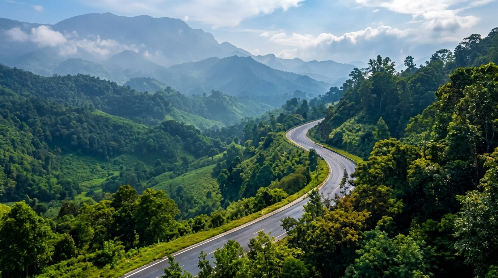
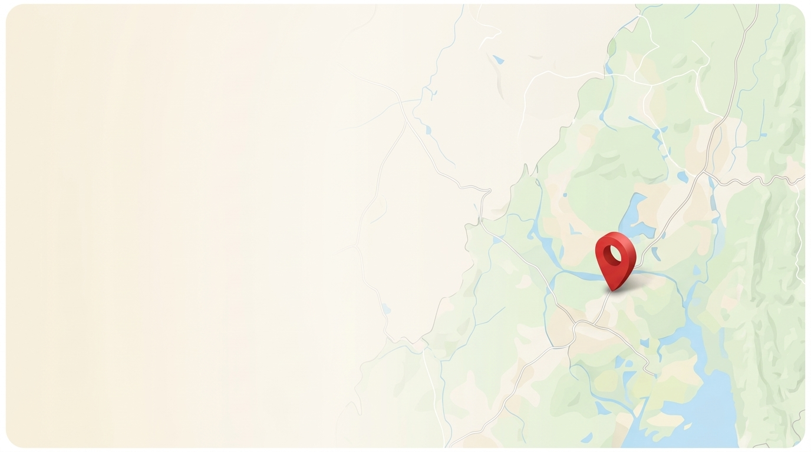

<!DOCTYPE html>
<html lang="en">
<head>
  <meta charset="UTF-8" />
  <meta name="viewport" content="width=device-width, initial-scale=1.0" />
  <title>Tripura Explore — Discover the Hidden Beauty of Tripura</title>
  <link rel="icon" type="image/svg+xml" href="data:image/svg+xml,%3Csvg xmlns='http://www.w3.org/2000/svg' viewBox='0 0 24 24' fill='none' stroke='%231B2A41' stroke-width='2'%3E%3Cpath d='m8 3 4 8 5-5 5 15H2L8 3z'/%3E%3C/svg%3E" />
  <!-- Google Fonts: Poppins & Inter -->
  <link rel="preconnect" href="https://fonts.googleapis.com">
  <link rel="preconnect" href="https://fonts.gstatic.com" crossorigin>
  <link href="https://fonts.googleapis.com/css2?family=Inter:wght@400;500;600;700&family=Poppins:wght@400;500;600;700;800;900&display=swap" rel="stylesheet">
  <!-- Tailwind CSS CDN -->
  <script src="https://cdn.tailwindcss.com"></script>
  <!-- React & Babel CDN for instant browser execution -->
  <script src="https://unpkg.com/react@18/umd/react.production.min.js" crossorigin></script>
  <script src="https://unpkg.com/react-dom@18/umd/react-dom.production.min.js" crossorigin></script>
  <script src="https://unpkg.com/@babel/standalone/babel.min.js"></script>
  <!-- Lucide Icons -->
  <script src="https://unpkg.com/lucide@latest"></script>

  <script>
    tailwind.config = {
      theme: {
        extend: {
          colors: {
            navy: {
              DEFAULT: '#1B2A41',
              dark: '#111D2E',
            },
            amber: {
              DEFAULT: '#E8892B',
              dark: '#CF751D',
            },
            forest: {
              DEFAULT: '#2F7D4F',
            },
            cream: {
              DEFAULT: '#FAF7F2',
              gold: '#F3E5C8',
            }
          },
          fontFamily: {
            sans: ['Poppins', 'Inter', 'system-ui', 'sans-serif'],
          },
          boxShadow: {
            'soft': '0 4px 20px -2px rgba(27, 42, 65, 0.07)',
            'card': '0 10px 30px -5px rgba(27, 42, 65, 0.08), 0 2px 6px -1px rgba(27, 42, 65, 0.04)',
            'lift': '0 20px 35px -8px rgba(27, 42, 65, 0.16)',
          }
        }
      }
    }
  </script>
  <style>
    body {
      background-color: #ECEFF3;
      font-family: 'Poppins', 'Inter', system-ui, sans-serif;
    }
    .hero-overlay {
      background: linear-gradient(90deg, rgba(14, 26, 42, 0.62) 0%, rgba(14, 26, 42, 0.40) 42%, rgba(14, 26, 42, 0.12) 70%, transparent 100%);
    }
    @media (max-width: 768px) {
      .hero-overlay {
        background: linear-gradient(180deg, rgba(17, 29, 46, 0.94) 0%, rgba(17, 29, 46, 0.86) 65%, rgba(17, 29, 46, 0.45) 100%);
      }
    }
    .glass-badge {
      background: rgba(255, 255, 255, 0.88);
      backdrop-filter: blur(8px);
      -webkit-backdrop-filter: blur(8px);
    }
  </style>
</head>
<body class="text-slate-800 antialiased selection:bg-[#E8892B] selection:text-white">
  <div id="root"></div>

  <script type="text/babel">
    const { useState, useEffect, useMemo } = React;

    // Mountain Logo SVG
    const MountainLogo = () => (
      <svg className="w-5 h-5" viewBox="0 0 24 24" fill="none" stroke="currentColor" strokeWidth="2.2" strokeLinecap="round" strokeLinejoin="round">
        <path d="m8 3 4 8 5-5 5 15H2L8 3z" />
      </svg>
    );

    // Initial destinations dataset with all destinations
    const INITIAL_DESTINATIONS = [
      {
        id: 1,
        name: 'Neermahal',
        category: 'Palace & Lake',
        categorySlug: 'lakes',
        location: 'Melaghar',
        rating: 4.8,
        imageUrl: 'app/static/images/places/neermahal.jpg',
        alt: 'Neermahal water palace on Rudrasagar lake at sunset in Melaghar Tripura',
        isFavorite: false,
      },
      {
        id: 2,
        name: 'Unakoti',
        category: 'Rock Carvings',
        categorySlug: 'heritage',
        location: 'Kailashahar',
        rating: 4.6,
        imageUrl: 'app/static/images/places/unakoti.jpg',
        alt: 'Unakoti ancient rock relief carvings in Kailashahar Tripura',
        isFavorite: false,
      },
      {
        id: 3,
        name: 'Ujjayanta Palace',
        category: 'Palace & Heritage',
        categorySlug: 'heritage',
        location: 'Agartala',
        rating: 4.7,
        imageUrl: 'app/static/images/places/ujjayanta-palace.jpg',
        alt: 'Ujjayanta Palace royal palace in Agartala Tripura',
        isFavorite: false,
      },
      {
        id: 4,
        name: 'Tripura Sundari Temple',
        category: 'Temple & Culture',
        categorySlug: 'temples',
        location: 'Udaipur',
        rating: 4.8,
        imageUrl: 'app/static/images/places/tripura-sundari-temple.jpg',
        alt: 'Tripura Sundari Temple traditional architecture in Udaipur Tripura',
        isFavorite: false,
      },
      {
        id: 5,
        name: 'Jampui Hills',
        category: 'Hills & Viewpoints',
        categorySlug: 'hills',
        location: 'Vanghmun',
        rating: 4.7,
        imageUrl: 'app/static/images/places/jampui-hills.jpg',
        alt: 'Jampui Hills misty green rolling mountains in North Tripura',
        isFavorite: false,
      },
      {
        id: 6,
        name: 'Dumboor Lake',
        category: 'Lakes & Islands',
        categorySlug: 'lakes',
        location: 'Gandacherra',
        rating: 4.6,
        imageUrl: 'app/static/images/places/dumboor-lake.jpg',
        alt: 'Dumboor Lake aerial view with lush green islands and blue reservoir waters',
        isFavorite: false,
      },
      {
        id: 7,
        name: 'Sepahijala Wildlife Sanctuary',
        category: 'Wildlife & Nature',
        categorySlug: 'nature',
        location: 'Bishalgarh',
        rating: 4.5,
        imageUrl: 'app/static/images/places/sepahijala-wildlife-sanctuary.jpg',
        alt: 'Sepahijala Zoological Park and Wildlife Sanctuary arch gate entrance',
        isFavorite: false,
      },
      {
        id: 8,
        name: 'Chabimura (Debtamura)',
        category: 'Rock Carvings',
        categorySlug: 'heritage',
        location: 'Amarpur',
        rating: 4.6,
        imageUrl: 'app/static/images/places/chabimura-debtamura.jpg',
        alt: 'Chabimura ancient Durga rock relief carvings on cliff above Gomti river',
        isFavorite: false,
      },
      {
        id: 9,
        name: 'Pilak',
        category: 'Heritage & Archaeology',
        categorySlug: 'heritage',
        location: 'Jolaibari',
        rating: 4.5,
        imageUrl: 'app/static/images/places/pilak.jpg',
        alt: 'Pilak ancient Buddhist and Hindu stone monolith sculpture archaeological site',
        isFavorite: false,
      },
      {
        id: 10,
        name: 'Trishna Wildlife Sanctuary',
        category: 'Wildlife & Nature',
        categorySlug: 'nature',
        location: 'Belonia',
        rating: 4.6,
        imageUrl: 'app/static/images/places/trishna-wildlife-sanctuary.jpg',
        alt: 'Trishna Wildlife Sanctuary lake canopy bridge and lush forest reserve',
        isFavorite: false,
      },
      {
        id: 11,
        name: 'Kamalasagar',
        category: 'Temple & Lake',
        categorySlug: 'temples',
        location: 'Kashba',
        rating: 4.6,
        imageUrl: 'app/static/images/places/kamalasagar.jpg',
        alt: 'Kamalasagar Kali temple and lake beside Bangladesh border in Sepahijala',
        isFavorite: false,
      },
      {
        id: 12,
        name: 'Bhuvaneswari Temple',
        category: 'Historic Temple',
        categorySlug: 'temples',
        location: 'Udaipur',
        rating: 4.6,
        imageUrl: 'app/static/images/places/bhuvaneswari-temple.jpg',
        alt: 'Bhuvaneswari Temple 17th century brick terracotta temple on Gomti riverbank in Udaipur',
        isFavorite: false,
      },
      {
        id: 13,
        name: 'Boxanagar',
        category: 'Buddhist Heritage',
        categorySlug: 'heritage',
        location: 'Sonamura',
        rating: 4.5,
        imageUrl: 'app/static/images/places/boxanagar.jpg',
        alt: 'Boxanagar ancient Buddhist brick stupa complex archaeological ruins in Sepahijala',
        isFavorite: false,
      },
      {
        id: 14,
        name: 'Heritage Park',
        category: 'Culture & Park',
        categorySlug: 'culture',
        location: 'Agartala',
        rating: 4.6,
        imageUrl: 'app/static/images/places/heritage-park.jpg',
        alt: 'Heritage Park ceremonial carved tribal sculpture entrance gate in Agartala',
        isFavorite: false,
      },
      {
        id: 15,
        name: 'Gumti Wildlife Sanctuary',
        category: 'Wildlife & Nature',
        categorySlug: 'nature',
        location: 'Amarpur',
        rating: 4.5,
        imageUrl: 'app/static/images/places/gumti-wildlife-sanctuary.jpg',
        alt: 'Gumti Wildlife Sanctuary eco walkway lake pavilion and riverine forest reserve in Amarpur',
        isFavorite: false,
      },
    ];

    // Comprehensive Local Experiences Dataset for Tripura Explore
// Covers all 6 types and all 8 districts of Tripura

const experienceCategories = [
  { id: 'Homestay', name: 'Homestay', icon: 'Home', color: 'bg-emerald-50 text-emerald-700 border-emerald-200' },
  { id: 'Local Guide', name: 'Local Guide', icon: 'Compass', color: 'bg-sky-50 text-sky-700 border-sky-200' },
  { id: 'Restaurant', name: 'Restaurant', icon: 'UtensilsCrossed', color: 'bg-amber-50 text-amber-700 border-amber-200' },
  { id: 'Transport', name: 'Transport', icon: 'Car', color: 'bg-indigo-50 text-indigo-700 border-indigo-200' },
  { id: 'Handicrafts', name: 'Handicrafts', icon: 'Palette', color: 'bg-purple-50 text-purple-700 border-purple-200' },
  { id: 'Cultural Experience', name: 'Cultural Experience', icon: 'Sparkles', color: 'bg-rose-50 text-rose-700 border-rose-200' },
];

const experienceDistricts = [
  { slug: 'west-tripura', name: 'West Tripura', hq: 'Agartala' },
  { slug: 'sepahijala', name: 'Sepahijala', hq: 'Bishramganj / Melaghar' },
  { slug: 'khowai', name: 'Khowai', hq: 'Khowai Town' },
  { slug: 'gomati', name: 'Gomati', hq: 'Udaipur' },
  { slug: 'south-tripura', name: 'South Tripura', hq: 'Belonia' },
  { slug: 'dhalai', name: 'Dhalai', hq: 'Ambassa' },
  { slug: 'unakoti', name: 'Unakoti', hq: 'Kailashahar' },
  { slug: 'north-tripura', name: 'North Tripura', hq: 'Dharmanagar' },
];

const experiencesList = [
  // =========================================================================
  // 1. WEST TRIPURA
  // =========================================================================
  {
    id: 1,
    name: 'Ujjayanta Heritage Homestay',
    slug: 'ujjayanta-heritage-homestay-agartala',
    category: 'Homestay',
    district: 'West Tripura',
    districtSlug: 'west-tripura',
    locality: 'Radhanagar, Agartala',
    address: 'Near Ujjayanta Palace North Gate, Radhanagar, Agartala',
    shortDescription: 'Colonial-era heritage guesthouse walking distance from Ujjayanta Palace.',
    description: 'Experience royal Agartala hospitality in a carefully restored heritage property. Featuring airy veranda seating, lush courtyards, traditional Tripura bamboo furnishings, and warm home-cooked Bengali and Tripuri breakfasts.',
    languages: 'Bengali, English, Hindi, Kokborok',
    priceNote: '₹1,800 - ₹2,600 / night with breakfast',
    contactName: 'Bikramjit Debbarma',
    contactPhone: '+91 94361 24501',
    contactEmail: 'ujjayanta.homestay@tripuraexplore.org',
    imageUrl: '/images/places/ujjayanta-palace.jpg',
    imageAlt: 'Ujjayanta Heritage Homestay exterior and garden in Agartala',
    verified: true,
    rating: 4.9,
  },
  {
    id: 2,
    name: 'Demo Local Guide - Agartala',
    slug: 'demo-local-guide-agartala',
    category: 'Local Guide',
    district: 'West Tripura',
    districtSlug: 'west-tripura',
    locality: 'Agartala City Core',
    address: 'Post Office Chowmuhani, Agartala',
    shortDescription: 'Certified government tourism guide for Agartala heritage sites.',
    description: 'Specialized historical and cultural walking trails across Ujjayanta Palace Museum, Heritage Park, Jagannath Temple, and Old Agartala Chaturdash Devta Temple. Includes royal history, folklore, and photography spots.',
    languages: 'Bengali, English, Kokborok, Hindi',
    priceNote: '₹1,200 / full day heritage tour',
    contactName: 'Debabrata Majumder',
    contactPhone: '+91 94361 58210',
    contactEmail: 'guide.agartala@tripuraexplore.org',
    imageUrl: '/images/places/heritage-park.jpg',
    imageAlt: 'Local guide leading heritage walking tour in Agartala',
    verified: true,
    rating: 4.8,
  },
  {
    id: 3,
    name: 'Khangsar Traditional Tripuri Restaurant',
    slug: 'khangsar-traditional-tripuri-restaurant',
    category: 'Restaurant',
    district: 'West Tripura',
    districtSlug: 'west-tripura',
    locality: 'City Centre, Agartala',
    address: 'Hari Ganga Basak Road, Agartala',
    shortDescription: 'Authentic tribal gastronomic haven serving indigenous delicacies.',
    description: 'Tripura premier authentic ethnic eatery. Enjoy authentic Mui Borok delicacies, herbal Chakhwi prepared with fresh bamboo shoots and sodium bicarbonate, spicy Berma Mosdeng, smoked country chicken, and fragrant Bangui sticky rice parcels.',
    languages: 'Kokborok, Bengali, English',
    priceNote: '₹250 - ₹550 per authentic thali',
    contactName: 'Ratan Debbarma',
    contactPhone: '+91 98620 44120',
    contactEmail: 'khangsar.dine@tripuraexplore.org',
    imageUrl: '/images/places/heritage-park-1.jpg',
    imageAlt: 'Traditional Tripuri culinary spread with bamboo shoot dishes',
    verified: true,
    rating: 4.7,
  },
  {
    id: 4,
    name: 'Demo Transport Service - Agartala',
    slug: 'demo-transport-service-agartala',
    category: 'Transport',
    district: 'West Tripura',
    districtSlug: 'west-tripura',
    locality: 'Motor Stand, Agartala',
    address: 'TRTC Bus Complex, Krishnanagar, Agartala',
    shortDescription: 'Reliable tourist cabs, SUVs, and airport transfer fleet.',
    description: 'Well-maintained air-conditioned sedans, SUVs, and tempo travellers covering all 8 districts of Tripura. Offering Maharaja Bir Bikram Airport pickups, multi-day circuit tours, and round-trip customized rentals with experienced hill drivers.',
    languages: 'Bengali, Hindi, English',
    priceNote: '₹2,200 - ₹3,600 / day depending on vehicle',
    contactName: 'Subir Paul',
    contactPhone: '+91 94361 88934',
    contactEmail: 'transport.agartala@tripuraexplore.org',
    imageUrl: '/images/places/ujjayanta-palace-1.jpg',
    imageAlt: 'Tourist taxi service at Agartala station',
    verified: true,
    rating: 4.8,
  },
  {
    id: 5,
    name: 'Purbasha State Bamboo and Cane Emporium',
    slug: 'purbasha-bamboo-cane-emporium-agartala',
    category: 'Handicrafts',
    district: 'West Tripura',
    districtSlug: 'west-tripura',
    locality: 'Jail Road, Agartala',
    address: 'Purbasha Handicrafts Bhavan, Jail Road, Agartala',
    shortDescription: 'State emporium showcasing GI-tagged Tripura Risa and bamboo crafts.',
    description: 'State government supported master-artisan cooperative displaying Tripura finest bamboo screens, decorative night lamps, handwoven cane armchairs, and authentic GI-tagged handwoven Risa stoles and Pachra ceremonial cloths.',
    languages: 'Bengali, English, Hindi, Kokborok',
    priceNote: 'Artisan pricing: ₹150 - ₹4,800',
    contactName: 'Maitreyi Tripura',
    contactPhone: '+91 94361 31920',
    contactEmail: 'purbasha.emporium@tripuraexplore.org',
    imageUrl: '/images/places/heritage-park-2.jpg',
    imageAlt: 'Handcrafted bamboo lamps and Risa handloom textiles',
    verified: true,
    rating: 4.9,
  },
  {
    id: 6,
    name: 'Chaturdash Devta Cultural and Ritual Trail',
    slug: 'chaturdash-devta-cultural-trail-old-agartala',
    category: 'Cultural Experience',
    district: 'West Tripura',
    districtSlug: 'west-tripura',
    locality: 'Old Agartala / Khayerpur',
    address: 'Chaturdash Devta Temple Complex, Old Agartala',
    shortDescription: 'Historic 14-Deity temple rituals and royal heritage walk.',
    description: 'Guided spiritual and ethnographic immersion into the ancient temple of the 14 Gods (Chaturdash Devta) in Old Agartala. Learn about the royal Chantai priests, sacred copper plate traditions, traditional drums, and the historic Kharchi Puja origins.',
    languages: 'Bengali, Kokborok, English',
    priceNote: '₹500 per guided morning cultural session',
    contactName: 'Acharya Santanu Chantai',
    contactPhone: '+91 98621 77312',
    contactEmail: 'chaturdash.trail@tripuraexplore.org',
    imageUrl: '/images/places/ujjayanta-palace-2.jpg',
    imageAlt: 'Old Agartala Chaturdash Devta temple heritage court',
    verified: true,
    rating: 4.8,
  },

  // =========================================================================
  // 2. SEPAHIJALA
  // =========================================================================
  {
    id: 7,
    name: 'Demo Homestay near Bishalgarh',
    slug: 'demo-homestay-bishalgarh',
    category: 'Homestay',
    district: 'Sepahijala',
    districtSlug: 'sepahijala',
    locality: 'Bishalgarh',
    address: 'Bishalgarh Sanctuary Road, Sepahijala',
    shortDescription: 'Tranquil plantation cottage retreat bordering Sepahijala forest.',
    description: 'Nestled inside a serene rubber and organic spice plantation. Wake up to chirping birds, visit Sepahijala sanctuary and clouded leopard breeding center early in the morning, and feast on organic garden-to-table cuisine.',
    languages: 'Bengali, Kokborok, Hindi',
    priceNote: '₹1,400 - ₹2,100 / night with meals',
    contactName: 'Parimal Sarkar',
    contactPhone: '+91 94361 72190',
    contactEmail: 'bishalgarh.homestay@tripuraexplore.org',
    imageUrl: '/images/places/sepahijala-wildlife-sanctuary.jpg',
    imageAlt: 'Cozy eco cottage in lush plantation in Bishalgarh',
    verified: true,
    rating: 4.7,
  },
  {
    id: 8,
    name: 'Rudrasagar Lake and Birding Guide',
    slug: 'rudrasagar-lake-birding-guide-melaghar',
    category: 'Local Guide',
    district: 'Sepahijala',
    districtSlug: 'sepahijala',
    locality: 'Melaghar, Rudrasagar Lake',
    address: 'Rajghat Jetty, Melaghar',
    shortDescription: 'Expert wetland boatman and birding naturalist.',
    description: 'A native boatman and birdwatcher guiding visitors across the Ramsar wetland of Rudrasagar Lake. Spot migratory water birds, understand the royal water-harvesting engineering of Neermahal, and photograph the water palace from scenic angles.',
    languages: 'Bengali, Hindi, English',
    priceNote: '₹800 - ₹1,400 per private guided boat tour',
    contactName: 'Manik Chandra Barman',
    contactPhone: '+91 98622 34509',
    contactEmail: 'rudrasagar.guide@tripuraexplore.org',
    imageUrl: '/images/places/neermahal.jpg',
    imageAlt: 'Local boatman guiding visitors across Rudrasagar lake to Neermahal',
    verified: true,
    rating: 4.9,
  },
  {
    id: 9,
    name: 'Neermahal Viewpoint Fishermen Dhaba',
    slug: 'neermahal-viewpoint-fishermens-dhaba-melaghar',
    category: 'Restaurant',
    district: 'Sepahijala',
    districtSlug: 'sepahijala',
    locality: 'Rajghat, Melaghar',
    address: 'Near Melaghar Lake Park, Rajghat',
    shortDescription: 'Fresh Rudrasagar fish delicacies and lakeside dining.',
    description: 'Scenic lakeside open-air restaurant serving the day fresh Rudrasagar catch. Popular for fried Chitol and Pabda fish, spicy prawn mash (Chingri Bhorta), mustard Ilish curry, and fragrant local Kasoi Bwtwi vegetable broth.',
    languages: 'Bengali, Hindi',
    priceNote: '₹200 - ₹450 per meal',
    contactName: 'Gouranga Das',
    contactPhone: '+91 94361 44521',
    contactEmail: 'neermahal.dhaba@tripuraexplore.org',
    imageUrl: '/images/places/neermahal-1.jpg',
    imageAlt: 'Lakeside dining pavilion overlooking Neermahal water palace',
    verified: true,
    rating: 4.6,
  },
  {
    id: 10,
    name: 'Melaghar Boatmen and Tourist Cab Union',
    slug: 'melaghar-boatmen-tourist-cab-union',
    category: 'Transport',
    district: 'Sepahijala',
    districtSlug: 'sepahijala',
    locality: 'Melaghar Ghat & Sonamura',
    address: 'Rajghat Ferry Terminal, Melaghar',
    shortDescription: 'Authorized water ferry to Neermahal & inter-district cabs.',
    description: 'Authorized motorized boat shuttles across Rudrasagar Lake directly to Neermahal Palace docks. Also provides scheduled cab services connecting Melaghar to Boxanagar archaeological site, Sepahijala Zoo, and Agartala city.',
    languages: 'Bengali, Hindi',
    priceNote: '₹50/passenger shared boat; ₹600 private boat rental',
    contactName: 'Balaram Barman',
    contactPhone: '+91 98620 91823',
    contactEmail: 'melaghar.transport@tripuraexplore.org',
    imageUrl: '/images/places/neermahal-2.jpg',
    imageAlt: 'Wooden passenger boats docked on Rudrasagar lake at Melaghar',
    verified: true,
    rating: 4.8,
  },
  {
    id: 11,
    name: 'Sonamura Cane Weavers Guild',
    slug: 'sonamura-cane-weavers-guild',
    category: 'Handicrafts',
    district: 'Sepahijala',
    districtSlug: 'sepahijala',
    locality: 'Sonamura',
    address: 'Artisan Cluster Road, Sonamura Town',
    shortDescription: 'Generations-old cane furniture and bamboo basketry guild.',
    description: 'Rural artisan society famous for woven cane lounge chairs, natural bamboo partitions, picnic hampers, table runners, and intricate decorative bird cages crafted from seasoned local river-valley bamboo.',
    languages: 'Bengali, Kokborok',
    priceNote: 'Cooperative direct prices: ₹180 - ₹3,200',
    contactName: 'Anukul Chandra Rudra',
    contactPhone: '+91 94361 62719',
    contactEmail: 'sonamura.weavers@tripuraexplore.org',
    imageUrl: '/images/places/boxanagar.jpg',
    imageAlt: 'Artisans weaving intricate cane furniture and bamboo baskets',
    verified: true,
    rating: 4.7,
  },
  {
    id: 12,
    name: 'Boxanagar Buddhist Heritage Walk',
    slug: 'boxanagar-buddhist-heritage-walk',
    category: 'Cultural Experience',
    district: 'Sepahijala',
    districtSlug: 'sepahijala',
    locality: 'Boxanagar',
    address: 'ASI Protected Archaeological Site, Boxanagar',
    shortDescription: 'Excavated 7th-century terracotta stupa and monastic trail.',
    description: 'In-depth archaeological walk through the excavated 7th-to-8th century brick Buddhist stupa, chaitya hall, and monastic quarters at Boxanagar near the border. Learn about ancient trade links, terracotta sculptures, and the Mahayana Buddhist legacy.',
    languages: 'Bengali, English, Hindi',
    priceNote: '₹400 per person guided interpretive tour',
    contactName: 'Dr. Subhasis Barua',
    contactPhone: '+91 94361 80112',
    contactEmail: 'boxanagar.heritage@tripuraexplore.org',
    imageUrl: '/images/places/boxanagar-1.jpg',
    imageAlt: 'Ancient brick Buddhist stupa and monastic foundations at Boxanagar',
    verified: true,
    rating: 4.8,
  },

  // =========================================================================
  // 3. KHOWAI
  // =========================================================================
  {
    id: 13,
    name: 'Padmabil Tribal Eco Homestay',
    slug: 'padmabil-tribal-eco-homestay-khowai',
    category: 'Homestay',
    district: 'Khowai',
    districtSlug: 'khowai',
    locality: 'Padmabil, Khowai',
    address: 'Padmabil Village, Khowai Sub-division',
    shortDescription: 'Traditional bamboo stilt huts nestled by rolling green hills.',
    description: 'Stay in charming elevated bamboo stilt cottages run by an indigenous Tripuri host family. Experience warm village hospitality, learn traditional loom weaving, pluck fresh garden vegetables, and listen to evening folk tales under starry skies.',
    languages: 'Kokborok, Bengali, Hindi, English',
    priceNote: '₹1,300 - ₹1,900 / night with authentic home meals',
    contactName: 'Balaram Debbarma',
    contactPhone: '+91 94364 12890',
    contactEmail: 'padmabil.stay@tripuraexplore.org',
    imageUrl: '/images/places/kamalasagar.jpg',
    imageAlt: 'Traditional bamboo stilt homestay in rural Padmabil Khowai',
    verified: true,
    rating: 4.7,
  },
  {
    id: 14,
    name: 'Teliamura Hill and Forest Guide',
    slug: 'teliamura-hill-forest-guide-khowai',
    category: 'Local Guide',
    district: 'Khowai',
    districtSlug: 'khowai',
    locality: 'Teliamura',
    address: 'Near Railway Station, Teliamura',
    shortDescription: 'Scout for Baramura & Atharamura eco-trails and waterfalls.',
    description: 'Native trail scout with deep knowledge of the Khowai river basin, Chakmaghat barrage, and the forested Atharamura and Baramura hill ranges. Offers safe trekking, birdwatching excursions, and tours to hidden forest stream pools.',
    languages: 'Kokborok, Bengali, Hindi, English',
    priceNote: '₹1,000 / day nature & trekking guide',
    contactName: 'Sanjoy Reang',
    contactPhone: '+91 98623 51920',
    contactEmail: 'teliamura.guide@tripuraexplore.org',
    imageUrl: '/images/places/kamalasagar-1.jpg',
    imageAlt: 'Local guide leading forest trekking trail in Khowai hills',
    verified: true,
    rating: 4.6,
  },
  {
    id: 15,
    name: 'Khowai Riverside Traditional Kitchen',
    slug: 'khowai-riverside-traditional-kitchen',
    category: 'Restaurant',
    district: 'Khowai',
    districtSlug: 'khowai',
    locality: 'Khowai Town',
    address: 'Subhash Park Road, Khowai Town',
    shortDescription: 'Riverside dining serving smoked country chicken & bamboo shoots.',
    description: 'Cosy open-deck eatery situated right beside the Khowai river. Celebrated for slow-simmered desi chicken cooked with crushed bamboo shoot pulp, freshly made spicy dry fish Berma chutneys, boiled wild yams, and steamed tribal rice.',
    languages: 'Bengali, Kokborok',
    priceNote: '₹180 - ₹380 per hearty meal',
    contactName: 'Dipankar Saha',
    contactPhone: '+91 94361 93240',
    contactEmail: 'khowai.kitchen@tripuraexplore.org',
    imageUrl: '/images/places/kamalasagar-2.jpg',
    imageAlt: 'Riverside open-air restaurant serving local Tripuri cuisine',
    verified: true,
    rating: 4.6,
  },
  {
    id: 16,
    name: 'Khowai Valley Tourist Cabs',
    slug: 'khowai-valley-tourist-cabs',
    category: 'Transport',
    district: 'Khowai',
    districtSlug: 'khowai',
    locality: 'Khowai Bus Stand & Teliamura',
    address: 'Central Motor Stand, Khowai',
    shortDescription: 'Reliable cabs connecting Khowai, Teliamura, and Agartala.',
    description: 'Fleet of clean hatchback, sedan, and 4x4 vehicles. Provides daily transfers between Khowai town, Teliamura railway junction, Chakmaghat picnic spots, and onward journeys across the national highway towards Agartala and Ambassa.',
    languages: 'Bengali, Hindi',
    priceNote: '₹1,800 - ₹3,000 / day',
    contactName: 'Babul Das',
    contactPhone: '+91 98622 71180',
    contactEmail: 'khowai.cabs@tripuraexplore.org',
    imageUrl: '/images/places/heritage-park.jpg',
    imageAlt: 'Tourist taxi service parked in Khowai valley',
    verified: true,
    rating: 4.7,
  },
  {
    id: 17,
    name: 'Baramura Bamboo Craft Centre',
    slug: 'baramura-bamboo-craft-centre-chakmaghat',
    category: 'Handicrafts',
    district: 'Khowai',
    districtSlug: 'khowai',
    locality: 'Chakmaghat, Teliamura',
    address: 'Highway Craft Village, Chakmaghat, Khowai',
    shortDescription: 'Artisan cluster making bamboo flutes, rainsticks, and baskets.',
    description: 'Community handicraft facility located at the foot of Baramura hills. Indigenous craftsmen demonstrate carving tuned bamboo flutes, acoustic rainmakers, fine decorative trays, and sturdy woven harvest baskets sold directly at artisan prices.',
    languages: 'Kokborok, Bengali',
    priceNote: 'Handmade craft items: ₹100 - ₹1,600',
    contactName: 'Nayan Debbarma',
    contactPhone: '+91 94364 88219',
    contactEmail: 'baramura.crafts@tripuraexplore.org',
    imageUrl: '/images/places/bhuvaneswari-temple.jpg',
    imageAlt: 'Artisan shaping tuned bamboo flutes and woven baskets',
    verified: true,
    rating: 4.8,
  },
  {
    id: 18,
    name: 'Lebang Boomani Harvest Dance Workshop',
    slug: 'lebang-boomani-dance-workshop-padmabil',
    category: 'Cultural Experience',
    district: 'Khowai',
    districtSlug: 'khowai',
    locality: 'Padmabil, Khowai',
    address: 'Tribal Cultural Centre, Padmabil',
    shortDescription: 'Interactive Tripuri insect-catching harvest folk dance.',
    description: 'Participate in an enchanting folk workshop on the traditional Lebang Boomani dance. Discover how Tripuri farmers used rhythmic bamboo clappers (Tok-ka) to charm insects away from crops, accompanied by traditional Kham drums and Sarinda fiddles.',
    languages: 'Kokborok, Bengali, English',
    priceNote: '₹600 per participant with traditional attire demo',
    contactName: 'Kalyani Debbarma',
    contactPhone: '+91 98624 33019',
    contactEmail: 'lebang.dance@tripuraexplore.org',
    imageUrl: '/images/places/bhuvaneswari-temple-1.jpg',
    imageAlt: 'Tripuri folk dancers performing Lebang Boomani with bamboo clappers',
    verified: true,
    rating: 4.9,
  },

  // =========================================================================
  // 4. GOMATI
  // =========================================================================
  {
    id: 19,
    name: 'Matabari Pilgrim Nook',
    slug: 'matabari-pilgrim-nook-udaipur',
    category: 'Homestay',
    district: 'Gomati',
    districtSlug: 'gomati',
    locality: 'Matabari, Udaipur',
    address: 'Near Kalyan Sagar North Bank, Matabari, Udaipur',
    shortDescription: 'Peaceful heritage guesthouse near Tripura Sundari Temple.',
    description: 'Comfortable guesthouse situated 300 meters from the sacred Tripura Sundari Temple and Kalyan Sagar lake. Features pure vegetarian dining, quiet meditation courtyards, early morning temple darshan assistance, and sparkling clean rooms.',
    languages: 'Bengali, Hindi, English',
    priceNote: '₹1,200 - ₹1,800 / night',
    contactName: 'Sudhir Chandra Bhattacharjee',
    contactPhone: '+91 94361 68120',
    contactEmail: 'matabari.homestay@tripuraexplore.org',
    imageUrl: '/images/places/tripura-sundari-temple.jpg',
    imageAlt: 'Courtyard guesthouse near Kalyan Sagar tank in Udaipur',
    verified: true,
    rating: 4.8,
  },
  {
    id: 20,
    name: 'Udaipur Temple City Historian',
    slug: 'udaipur-temple-city-historian',
    category: 'Local Guide',
    district: 'Gomati',
    districtSlug: 'gomati',
    locality: 'Udaipur Town',
    address: 'Rajbari Complex, Udaipur',
    shortDescription: 'Expert architectural guide across Udaipur 50 historic lakes and shrines.',
    description: 'Deeply engaging walking tours covering the medieval Manikya royal capital: 16th-century Tripura Sundari Shakti Peeth, Tagore celebrated Bhuvaneswari Temple on the Gomati riverbank, Jagannath Temple, and the royal lakes (Amar Sagar, Dhani Sagar).',
    languages: 'Bengali, English, Hindi',
    priceNote: '₹1,100 / day temple city walking tour',
    contactName: 'Pradyot Kumar Roy',
    contactPhone: '+91 98621 19045',
    contactEmail: 'udaipur.historian@tripuraexplore.org',
    imageUrl: '/images/places/bhuvaneswari-temple.jpg',
    imageAlt: 'Historian guide narrating history at Bhuvaneswari temple ghats',
    verified: true,
    rating: 4.9,
  },
  {
    id: 21,
    name: 'Demo Restaurant - Udaipur',
    slug: 'demo-restaurant-udaipur',
    category: 'Restaurant',
    district: 'Gomati',
    districtSlug: 'gomati',
    locality: 'Matabari Road, Udaipur',
    address: 'Matabari Bazaar, Udaipur',
    shortDescription: 'Famed for traditional Matabari Peda sweets and Bengali thalis.',
    description: 'Legendary temple town dining hall celebrated for authentic Matabari Peda confections made from pure condensed buffalo milk and cardamom, crispy ghee kachoris, chana dal curries, and complete traditional vegetarian and fish thalis.',
    languages: 'Bengali, Hindi',
    priceNote: '₹150 - ₹400 per meal & sweet boxes',
    contactName: 'Gopal Krishna Ghosh',
    contactPhone: '+91 94361 55670',
    contactEmail: 'udaipur.sweets@tripuraexplore.org',
    imageUrl: '/images/places/tripura-sundari-temple-1.jpg',
    imageAlt: 'Traditional sweet and dining hall serving Matabari Peda in Udaipur',
    verified: true,
    rating: 4.9,
  },
  {
    id: 22,
    name: 'Gomati Explorer Jeeps and Cabs',
    slug: 'gomati-explorer-jeeps-cabs-udaipur',
    category: 'Transport',
    district: 'Gomati',
    districtSlug: 'gomati',
    locality: 'Central Road, Udaipur',
    address: 'Gomati District Transport Stand, Udaipur',
    shortDescription: 'Rugged jeeps and taxis for Udaipur, Amarpur, and Chabimura.',
    description: 'Specialized fleet of SUVs, Mahindra Boleros, and sedans. Daily departures from Udaipur to the steep river gorges of Chabimura, Amarpur water reservoir, Tepania Eco Park, and direct connections to Agartala and Pilak.',
    languages: 'Bengali, Hindi, Kokborok',
    priceNote: '₹2,000 - ₹3,500 / day',
    contactName: 'Bishnu Debnath',
    contactPhone: '+91 98622 84190',
    contactEmail: 'gomati.cabs@tripuraexplore.org',
    imageUrl: '/images/places/chabimura-debtamura.jpg',
    imageAlt: '4x4 jeep traversing scenic rural Gomati district roads',
    verified: true,
    rating: 4.8,
  },
  {
    id: 23,
    name: 'Tepania Woodcraft and Cane Society',
    slug: 'tepania-woodcraft-cane-society',
    category: 'Handicrafts',
    district: 'Gomati',
    districtSlug: 'gomati',
    locality: 'Tepania, Udaipur',
    address: 'Near Tepania Eco Park, Udaipur',
    shortDescription: 'Polished teak and cane handicrafts, tea sets, and sacred art.',
    description: 'Skilled cooperative of woodworkers and cane artisans crafting hand-turned teak tea cups, natural cane magazine racks, ornamental prayer altars, and miniature temple figurines inspired by Tripura Sundari iconography.',
    languages: 'Bengali, Hindi',
    priceNote: '₹250 - ₹3,400',
    contactName: 'Nirmal Sutradhar',
    contactPhone: '+91 94361 78902',
    contactEmail: 'tepania.crafts@tripuraexplore.org',
    imageUrl: '/images/places/bhuvaneswari-temple-2.jpg',
    imageAlt: 'Artisan handcrafting wooden religious statues and polished cane wares',
    verified: true,
    rating: 4.7,
  },
  {
    id: 24,
    name: 'Chabimura River Gorge Rock Art Expedition',
    slug: 'chabimura-river-gorge-rock-art-expedition',
    category: 'Cultural Experience',
    district: 'Gomati',
    districtSlug: 'gomati',
    locality: 'Chabimura / Amarpur',
    address: 'Chabimura Boat Ghat, Gomati River, Amarpur',
    shortDescription: 'Canyon boat safari to massive 15th-century cliff rock carvings.',
    description: 'Breathtaking boat journey through the steep virgin forest canyon of the Gomati river. View the enormous 15th-century rock-cut panel of Goddess Mahishasurmardini carved into sheer vertical cliffs, with local guides sharing indigenous legends.',
    languages: 'Kokborok, Bengali, English',
    priceNote: '₹1,200 per private motorboat charter (up to 6 persons)',
    contactName: 'Lalit Jamatia',
    contactPhone: '+91 98620 62118',
    contactEmail: 'chabimura.expedition@tripuraexplore.org',
    imageUrl: '/images/places/chabimura-debtamura-1.jpg',
    imageAlt: 'Traditional longboat navigating the Gomati canyon at Chabimura',
    verified: true,
    rating: 5.0,
  },

  // =========================================================================
  // 5. SOUTH TRIPURA
  // =========================================================================
  {
    id: 25,
    name: 'Pilak Archaeological Greens Homestay',
    slug: 'pilak-archaeological-greens-homestay',
    category: 'Homestay',
    district: 'South Tripura',
    districtSlug: 'south-tripura',
    locality: 'Jolaibari, Belonia',
    address: 'Near Pilak Excavation Site, Jolaibari',
    shortDescription: 'Peaceful organic eco-farm cottage right next to ancient Pilak.',
    description: 'Eco-friendly cottage accommodation located 500 meters from the 8th-century archaeological ruins of Pilak. Surrounded by betel palms, rubber trees, and organic spice plots. Home-cooked vegetarian and fish meals served with warm hospitality.',
    languages: 'Bengali, English, Kokborok, Mog',
    priceNote: '₹1,500 - ₹2,200 / night with farm meals',
    contactName: 'Supratim Chowdhury',
    contactPhone: '+91 94361 82341',
    contactEmail: 'pilak.greens@tripuraexplore.org',
    imageUrl: '/images/places/pilak.jpg',
    imageAlt: 'Rustic green cottage homestay near ancient Pilak ruins',
    verified: true,
    rating: 4.8,
  },
  {
    id: 26,
    name: 'South Tripura Heritage and Border Guide',
    slug: 'south-tripura-heritage-border-guide',
    category: 'Local Guide',
    district: 'South Tripura',
    districtSlug: 'south-tripura',
    locality: 'Belonia & Sabroom',
    address: 'Station Road, Belonia',
    shortDescription: 'Guide for Pilak Buddhist monuments, Trishna forest, and Maitri Setu.',
    description: 'Accredited heritage guide taking travelers through the 8th–12th century Buddhist and Hindu terracotta panels at Pilak, historical battle sites at Belonia, wildlife spotting inside Trishna sanctuary, and the new Maitri Setu border bridge at Sabroom.',
    languages: 'Bengali, English, Hindi, Mog',
    priceNote: '₹1,300 / full day guided circuit',
    contactName: 'Kamal Kanti Bhowmik',
    contactPhone: '+91 98623 11845',
    contactEmail: 'southtripura.guide@tripuraexplore.org',
    imageUrl: '/images/places/pilak-1.jpg',
    imageAlt: 'Heritage guide explaining ancient terracotta panels at Pilak',
    verified: true,
    rating: 4.9,
  },
  {
    id: 27,
    name: 'Mog Cultural Diner and Tribal Cafe',
    slug: 'mog-cultural-diner-tribal-cafe-jolaibari',
    category: 'Restaurant',
    district: 'South Tripura',
    districtSlug: 'south-tripura',
    locality: 'Jolaibari, South Tripura',
    address: 'Jolaibari Bazar, South Tripura',
    shortDescription: 'Rare authentic Mog ethnic gastronomy and herbal soups.',
    description: 'One of the few authentic Mog tribal culinary spots in the Northeast. Famous for aromatic herbal noodle broths, smoked river fish with indigenous wild ginger, fire-roasted bamboo shoot stir-fries, and fragrant sticky rice delicacies wrapped in banana leaves.',
    languages: 'Mog, Bengali, Kokborok',
    priceNote: '₹220 - ₹480 per meal',
    contactName: 'U Chit Mong Mog',
    contactPhone: '+91 94365 29104',
    contactEmail: 'mog.diner@tripuraexplore.org',
    imageUrl: '/images/places/pilak-2.jpg',
    imageAlt: 'Mog tribal culinary spread with herbal broths and smoked fish',
    verified: true,
    rating: 4.8,
  },
  {
    id: 28,
    name: 'Maitri Express Tourist Cabs',
    slug: 'maitri-express-tourist-cabs-sabroom',
    category: 'Transport',
    district: 'South Tripura',
    districtSlug: 'south-tripura',
    locality: 'Sabroom / Belonia',
    address: 'Sabroom Railway Terminal Road, Sabroom',
    shortDescription: 'Transfers between Sabroom railhead, Trishna Sanctuary, and Pilak.',
    description: 'Premier cab operator based at Tripura southern tip. Connecting passengers from Sabroom railway station directly to Trishna Wildlife Sanctuary, Pilak archaeological zone, Muhurighat border post in Belonia, and onward to Agartala.',
    languages: 'Bengali, Hindi',
    priceNote: '₹2,400 - ₹3,800 / day rental',
    contactName: 'Sanjib Das',
    contactPhone: '+91 98621 44029',
    contactEmail: 'maitri.cabs@tripuraexplore.org',
    imageUrl: '/images/places/trishna-wildlife-sanctuary.jpg',
    imageAlt: 'Tourist SUV driving past lush roadside in South Tripura',
    verified: true,
    rating: 4.7,
  },
  {
    id: 29,
    name: 'South Tripura Bamboo Toy and Mat Weavers',
    slug: 'south-tripura-bamboo-toy-mat-weavers',
    category: 'Handicrafts',
    district: 'South Tripura',
    districtSlug: 'south-tripura',
    locality: 'Santirbazar',
    address: 'Artisan Co-op complex, Santirbazar',
    shortDescription: 'Artisan cooperative crafting cool Shitalpati mats and bamboo toys.',
    description: 'Generations-old artisan workshop specializing in traditional Shitalpati sleeping mats woven from Murta reeds that stay naturally cool in the summer heat, alongside handcrafted wooden figurines and bamboo tabletop decor.',
    languages: 'Bengali, Kokborok',
    priceNote: '₹180 - ₹2,500',
    contactName: 'Ashok Kumar Deb',
    contactPhone: '+91 94361 74830',
    contactEmail: 'santirbazar.crafts@tripuraexplore.org',
    imageUrl: '/images/places/trishna-wildlife-sanctuary-1.jpg',
    imageAlt: 'Weavers working on smooth Shitalpati mats in Santirbazar',
    verified: true,
    rating: 4.8,
  },
  {
    id: 30,
    name: 'Trishna Bison Tracking and Forest Safari',
    slug: 'trishna-bison-tracking-forest-safari',
    category: 'Cultural Experience',
    district: 'South Tripura',
    districtSlug: 'south-tripura',
    locality: 'Rajnagar / Trishna',
    address: 'Trishna Wildlife Range Office, Joychandrapur',
    shortDescription: 'Guided wildlife trek to spot wild Indian Bison (Gaur) & butterflies.',
    description: 'Accompanied by an authorized forest guard and local naturalist, venture into the primary moist deciduous forests of Trishna Sanctuary. Track the majestic Indian Gaur (wild bison), golden langurs, pheasant colonies, and explore the Butterfly Park.',
    languages: 'Bengali, English, Hindi',
    priceNote: '₹700 per person eco-safari permit & guide',
    contactName: 'Ratan Shil',
    contactPhone: '+91 98622 90118',
    contactEmail: 'trishna.safari@tripuraexplore.org',
    imageUrl: '/images/places/trishna-wildlife-sanctuary-2.jpg',
    imageAlt: 'Indian Gaur herd grazing in Trishna wildlife sanctuary grasslands',
    verified: true,
    rating: 4.9,
  },

  // =========================================================================
  // 6. DHALAI
  // =========================================================================
  {
    id: 31,
    name: 'Dumboor Island Water Homestay',
    slug: 'dumboor-island-water-homestay-gandacherra',
    category: 'Homestay',
    district: 'Dhalai',
    districtSlug: 'dhalai',
    locality: 'Gandacherra, Dhalai',
    address: 'Island No. 12, Dumboor Lake, Gandacherra',
    shortDescription: 'Picturesque lake islet cottage with panoramic reservoir views.',
    description: 'Wake up surrounded by the serene waters of Dumboor Lake with its 48 emerald islands. Stay in traditional bamboo-and-timber waterfront chalets, take sunrise canoe rides, and enjoy freshly caught fish prepared in indigenous styles.',
    languages: 'Kokborok, Bengali, Hindi, English',
    priceNote: '₹1,600 - ₹2,700 / night including boat transfer',
    contactName: 'Subal Tripura',
    contactPhone: '+91 94361 95011',
    contactEmail: 'dumboor.homestay@tripuraexplore.org',
    imageUrl: '/images/places/dumboor-lake.jpg',
    imageAlt: 'Waterfront cottages on an emerald island in Dumboor lake',
    verified: true,
    rating: 4.9,
  },
  {
    id: 32,
    name: 'Dhalai Hills and Wildlife Trail Scout',
    slug: 'dhalai-hills-wildlife-trail-scout-ambassa',
    category: 'Local Guide',
    district: 'Dhalai',
    districtSlug: 'dhalai',
    locality: 'Ambassa & Gandacherra',
    address: 'District HQ Complex, Ambassa',
    shortDescription: 'Naturalist guide for Dumboor Lake, Narkel Kunja, and hill villages.',
    description: 'Native Dhalai expedition guide. Leads island-hopping adventures across Dumboor Lake, Coconut Island (Narkel Kunja), Gumti wildlife reserve boat safaris, and ethnographic excursions into remote Reang and Tripuri hill settlements.',
    languages: 'Kokborok, Bengali, English',
    priceNote: '₹1,200 / day island and hill expedition',
    contactName: 'Rabindra Reang',
    contactPhone: '+91 98621 82940',
    contactEmail: 'dhalai.scout@tripuraexplore.org',
    imageUrl: '/images/places/dumboor-lake-1.jpg',
    imageAlt: 'Scout guiding travelers by boat through Dumboor lake islands',
    verified: true,
    rating: 4.8,
  },
  {
    id: 33,
    name: 'Gandacherra Lakeside Fish House',
    slug: 'gandacherra-lakeside-fish-house',
    category: 'Restaurant',
    district: 'Dhalai',
    districtSlug: 'dhalai',
    locality: 'Gandacherra Ghat',
    address: 'Ghat Road, Gandacherra',
    shortDescription: 'Fresh water-reservoir fish curries and authentic ethnic barbecue.',
    description: 'Celebrated open-air lakeside restaurant serving reservoir fish caught hours earlier. Specialties include wood-fired grilled fish with wild herbs, bamboo-steamed pork cubes with ginger and chilies, spicy Berma mash, and steaming hill rice.',
    languages: 'Kokborok, Bengali',
    priceNote: '₹200 - ₹460 per meal',
    contactName: 'Balaram Tripura',
    contactPhone: '+91 94364 55190',
    contactEmail: 'gandacherra.fish@tripuraexplore.org',
    imageUrl: '/images/places/dumboor-lake-2.jpg',
    imageAlt: 'Lakeside dining deck serving fresh Dumboor fish and barbecue',
    verified: true,
    rating: 4.7,
  },
  {
    id: 34,
    name: 'Dumboor Motorboat and 4WD Services',
    slug: 'dumboor-motorboat-4wd-services',
    category: 'Transport',
    district: 'Dhalai',
    districtSlug: 'dhalai',
    locality: 'Narkel Kunja Ghat, Gandacherra',
    address: 'Boat Jetty, Gandacherra',
    shortDescription: 'Speedboats to Narkel Kunja island & 4x4 Boleros to Ambassa.',
    description: 'Licensed speedboat and longboat ferry operations providing direct water transport to Coconut Island (Narkel Kunja) and Dumboor Lake islets. Also runs scheduled 4WD passenger jeeps to Ambassa railway station and Kamalpur.',
    languages: 'Kokborok, Bengali, Hindi',
    priceNote: '₹300 - ₹800 boat transfers; ₹2,600 / day cab rental',
    contactName: 'Prabir Barman',
    contactPhone: '+91 98623 77410',
    contactEmail: 'dumboor.transport@tripuraexplore.org',
    imageUrl: '/images/places/gumti-wildlife-sanctuary.jpg',
    imageAlt: 'Motorboats docked at Gandacherra jetty on Dumboor lake',
    verified: true,
    rating: 4.8,
  },
  {
    id: 35,
    name: 'Reang Tribal Bead and Bamboo Artisans',
    slug: 'reang-tribal-bead-bamboo-artisans-chawmanu',
    category: 'Handicrafts',
    district: 'Dhalai',
    districtSlug: 'dhalai',
    locality: 'Manu & Chawmanu',
    address: 'Artisan Hamlet, Chawmanu, Dhalai',
    shortDescription: 'Multi-strand glass bead necklaces & hand-carved bamboo pipes.',
    description: 'Authentic Reang (Bru) community craft workshop producing traditional colorful multi-strand glass-bead necklaces (Rangkashah), ceremonial silver-plated ear pendants, finely polished bamboo smoking pipes, and woven utility bags.',
    languages: 'Kokborok / Reang, Bengali',
    priceNote: 'Authentic tribal crafts: ₹150 - ₹1,900',
    contactName: 'Padma Kumar Reang',
    contactPhone: '+91 94361 66209',
    contactEmail: 'reang.crafts@tripuraexplore.org',
    imageUrl: '/images/places/gumti-wildlife-sanctuary-1.jpg',
    imageAlt: 'Reang artisan stringing traditional colorful bead necklaces',
    verified: true,
    rating: 4.8,
  },
  {
    id: 36,
    name: 'Reang Hojagiri Dance Immersion',
    slug: 'reang-hojagiri-dance-immersion-ambassa',
    category: 'Cultural Experience',
    district: 'Dhalai',
    districtSlug: 'dhalai',
    locality: 'Ambassa / Gandacherra',
    address: 'Reang Cultural Society, Kulai, Ambassa',
    shortDescription: 'Acrobatic pitcher-balancing folk dance performance and workshop.',
    description: 'World-renowned Hojagiri dance performed by trained Reang women dancers who balance atop brass pitchers with lit oil lamps or bottles on their heads while moving only their lower body. Includes live percussion, costume history, and masterclass steps.',
    languages: 'Kokborok, Reang, Bengali, English',
    priceNote: '₹800 per performance & interactive workshop',
    contactName: 'Bikash Reang',
    contactPhone: '+91 98622 18934',
    contactEmail: 'hojagiri.dance@tripuraexplore.org',
    imageUrl: '/images/places/gumti-wildlife-sanctuary-2.jpg',
    imageAlt: 'Reang dancers performing Hojagiri dance atop bronze pitchers',
    verified: true,
    rating: 5.0,
  },

  // =========================================================================
  // 7. UNAKOTI
  // =========================================================================
  {
    id: 37,
    name: 'Kailashahar Heritage Villa Homestay',
    slug: 'kailashahar-heritage-villa-homestay',
    category: 'Homestay',
    district: 'Unakoti',
    districtSlug: 'unakoti',
    locality: 'Kailashahar',
    address: 'Tea Estate Bungalow Road, Kailashahar',
    shortDescription: 'Charming colonial tea planter bungalow near Unakoti.',
    description: 'Set on the edge of a lush green tea estate near Kailashahar. Featuring wide breezy verandas, high wooden ceilings, antique four-poster beds, home-grown organic vegetables, and personalized excursions to the rock carvings of Unakoti.',
    languages: 'Bengali, English, Hindi',
    priceNote: '₹1,500 - ₹2,400 / night with morning estate tea',
    contactName: 'Aniruddha Singha',
    contactPhone: '+91 94361 71822',
    contactEmail: 'kailashahar.villa@tripuraexplore.org',
    imageUrl: '/images/places/unakoti.jpg',
    imageAlt: 'Verandah of colonial tea planter bungalow homestay in Kailashahar',
    verified: true,
    rating: 4.8,
  },
  {
    id: 38,
    name: 'Unakoti Rock-Cut Pilgrimage Guide',
    slug: 'unakoti-rock-cut-pilgrimage-guide',
    category: 'Local Guide',
    district: 'Unakoti',
    districtSlug: 'unakoti',
    locality: 'Unakoti Hills, Kailashahar',
    address: 'Unakoti Archaeological Interpretation Centre, Kailashahar',
    shortDescription: 'Expert Shaiva archaeologist guide for Unakoti 30-ft Kal Bhairava.',
    description: 'Certified ASI heritage guide unravelling the legends of the 99,99,999 deities (\'one less than a crore\'). Explains the massive 30-foot Unakotiswara Kal Bhairava rock relief, Ganesha panels, natural hillside waterfall kund, and Shaiva pilgrimage history.',
    languages: 'Bengali, English, Hindi, Kokborok',
    priceNote: '₹1,000 / day archaeological interpretive tour',
    contactName: 'Bishnu Charan Das',
    contactPhone: '+91 98621 65421',
    contactEmail: 'unakoti.guide@tripuraexplore.org',
    imageUrl: '/images/places/unakoti-1.jpg',
    imageAlt: 'Guide pointing to the colossal rock-cut face of Unakotiswara Kal Bhairava',
    verified: true,
    rating: 4.9,
  },
  {
    id: 39,
    name: 'Kailashahar Spices and Sweets',
    slug: 'kailashahar-spices-sweets-unakoti',
    category: 'Restaurant',
    district: 'Unakoti',
    districtSlug: 'unakoti',
    locality: 'Cinema Hall Road, Kailashahar',
    address: 'Main Road, Kailashahar Town',
    shortDescription: 'Famous for North Tripura freshwater fish and milk sweets.',
    description: 'Beloved multi-generation town restaurant famous for authentic freshwater fish curries caught in the Manu river, spiced lentil fritters, homemade ghee luchis, and traditional regional sandesh and rasgulla confections.',
    languages: 'Bengali, Hindi',
    priceNote: '₹160 - ₹380 per meal',
    contactName: 'Subir Paul',
    contactPhone: '+91 94361 89045',
    contactEmail: 'kailashahar.spices@tripuraexplore.org',
    imageUrl: '/images/places/unakoti-2.jpg',
    imageAlt: 'Traditional dining room serving Bengali and North Tripura dishes',
    verified: true,
    rating: 4.7,
  },
  {
    id: 40,
    name: 'Unakoti Hill Taxi and Auto Association',
    slug: 'unakoti-hill-taxi-auto-association',
    category: 'Transport',
    district: 'Unakoti',
    districtSlug: 'unakoti',
    locality: 'Kumarghat & Kailashahar',
    address: 'Kumarghat Railway Station Stand, Kumarghat',
    shortDescription: 'Station pickup and circuit taxis for Unakoti and Pecharthal.',
    description: 'Official taxi syndicate operating from Kumarghat railway station. Providing scheduled and on-demand transfers to Unakoti archaeological site, Kailashahar border town, Pecharthal Buddhist Monastery, and onward toward Dharmanagar.',
    languages: 'Bengali, Hindi',
    priceNote: '₹1,500 - ₹2,800 / day circuit hire',
    contactName: 'Manik Deb',
    contactPhone: '+91 98622 41908',
    contactEmail: 'unakoti.taxi@tripuraexplore.org',
    imageUrl: '/images/places/unakoti.jpg',
    imageAlt: 'Tourist cabs waiting at Kumarghat station in Unakoti district',
    verified: true,
    rating: 4.8,
  },
  {
    id: 41,
    name: 'Kumarghat Cane and Shitalpati Weaver Center',
    slug: 'kumarghat-cane-shitalpati-weaver-center',
    category: 'Handicrafts',
    district: 'Unakoti',
    districtSlug: 'unakoti',
    locality: 'Kumarghat',
    address: 'Station Road, Kumarghat',
    shortDescription: 'Finest natural cooling Shitalpati mats and cane trays.',
    description: 'Master-weaver guild producing GI-standard Shitalpati floor and bed mats crafted from wild Murta reeds. These natural mats retain a cool touch throughout sultry summer months. Also crafts delicate woven hand-fans and cane bread baskets.',
    languages: 'Bengali, Hindi',
    priceNote: 'Direct artisan prices: ₹350 - ₹3,600',
    contactName: 'Gouranga Dey',
    contactPhone: '+91 94361 47219',
    contactEmail: 'kumarghat.weavers@tripuraexplore.org',
    imageUrl: '/images/places/unakoti-1.jpg',
    imageAlt: 'Artisan hand-weaving a smooth Shitalpati cool mat',
    verified: true,
    rating: 4.8,
  },
  {
    id: 42,
    name: 'Ashokastami Folk Celebration Trail',
    slug: 'ashokastami-folk-celebration-trail-unakoti',
    category: 'Cultural Experience',
    district: 'Unakoti',
    districtSlug: 'unakoti',
    locality: 'Unakoti Hills',
    address: 'Unakoti Sacred Spring Kund, Kailashahar',
    shortDescription: 'Historic spring ritual trail and tribal bard folk singing.',
    description: 'Participate in an insightful cultural walk along the sacred stream of Unakoti. Learn about the ancient Ashokastami Mela fair, hear spiritual folk songs sung by local Baul and indigenous bards, and observe stone-carver legacy workshops.',
    languages: 'Bengali, Kokborok, English',
    priceNote: '₹500 per guided trail session',
    contactName: 'Priyanath Bhattacharjee',
    contactPhone: '+91 98621 73349',
    contactEmail: 'ashokastami.trail@tripuraexplore.org',
    imageUrl: '/images/places/unakoti-2.jpg',
    imageAlt: 'Devotees and folk musicians celebrating by the sacred Unakoti spring',
    verified: true,
    rating: 4.9,
  },

  // =========================================================================
  // 8. NORTH TRIPURA
  // =========================================================================
  {
    id: 43,
    name: 'Jampui Misty Peak Mizo Homestay',
    slug: 'jampui-misty-peak-mizo-homestay',
    category: 'Homestay',
    district: 'North Tripura',
    districtSlug: 'north-tripura',
    locality: 'Vanghmun, Jampui Hills',
    address: 'Ridge Road, Vanghmun Village, Jampui Hills',
    shortDescription: 'Panoramic wooden mountain cottage in Tripura highest range.',
    description: 'Nestled amidst fragrant orange orchards and cloud-covered hilltops in Vanghmun. Experience warm Mizo tribal hospitality, stunning views of misty valleys stretching to Chittagong and Mizoram, fresh organic mountain stews, and cozy pine-wood interiors.',
    languages: 'Mizo, English, Bengali, Hindi',
    priceNote: '₹1,600 - ₹2,500 / night with mountain dinner',
    contactName: 'Lalremruata Sailo',
    contactPhone: '+91 94361 38201',
    contactEmail: 'jampui.stay@tripuraexplore.org',
    imageUrl: '/images/places/jampui-hills.jpg',
    imageAlt: 'Wooden mountain homestay balcony overlooking misty Jampui ridges',
    verified: true,
    rating: 5.0,
  },
  {
    id: 44,
    name: 'Jampui Ridges and Trekking Guide',
    slug: 'jampui-ridges-trekking-guide',
    category: 'Local Guide',
    district: 'North Tripura',
    districtSlug: 'north-tripura',
    locality: 'Vanghmun & Phuldungsei',
    address: 'Betlingchhip Trailhead, Phuldungsei, Jampui Hills',
    shortDescription: 'Betlingchhip peak summit guide and orange orchard trails.',
    description: 'Experienced mountain guide offering hiking excursions to Betlingchhip (930m, Tripura highest peak), sunrise viewpoints, walking trails through picturesque Mizo hamlets, orchid forests, and seasonal orange picking tours.',
    languages: 'Mizo, English, Bengali, Hindi',
    priceNote: '₹1,200 / day mountain trekking expedition',
    contactName: 'Zodingliana Ralte',
    contactPhone: '+91 98622 55903',
    contactEmail: 'jampui.guide@tripuraexplore.org',
    imageUrl: '/images/places/jampui-hills-1.jpg',
    imageAlt: 'Trekking guide leading trail through lush green Jampui hills',
    verified: true,
    rating: 4.9,
  },
  {
    id: 45,
    name: 'Cloud Peak Orchid Cafe',
    slug: 'cloud-peak-orchid-cafe-vanghmun',
    category: 'Restaurant',
    district: 'North Tripura',
    districtSlug: 'north-tripura',
    locality: 'Vanghmun Village, Jampui Hills',
    address: 'Viewpoint Cliff, Vanghmun',
    shortDescription: 'Hilltop cafe serving organic Tripura coffee and Mizo specialties.',
    description: 'Scenic cliffside cafe overlooking breathtaking mountain valleys. Serving fresh hand-brewed Tripura coffee, herbal mountain teas, smoked pork with mustard greens, bamboo shoot stew, freshly steamed sticky corn rice, and honey pastries.',
    languages: 'Mizo, English, Bengali',
    priceNote: '₹180 - ₹440 per meal & coffee',
    contactName: 'Vanlalruati Colney',
    contactPhone: '+91 94364 81094',
    contactEmail: 'orchid.cafe@tripuraexplore.org',
    imageUrl: '/images/places/jampui-hills-2.jpg',
    imageAlt: 'Cliffside terrace cafe with panoramic mountain views in Jampui Hills',
    verified: true,
    rating: 4.8,
  },
  {
    id: 46,
    name: 'Jampui Mountain 4x4 Cabs',
    slug: 'jampui-mountain-4x4-cabs-dharmanagar',
    category: 'Transport',
    district: 'North Tripura',
    districtSlug: 'north-tripura',
    locality: 'Dharmanagar & Kanchanpur',
    address: 'Station Stand, Dharmanagar',
    shortDescription: 'Heavy-duty 4WD SUVs for scenic mountain ghat climbs.',
    description: 'Specialist 4x4 Bolero, Scorpio, and tourist taxi fleet built for the winding mountain roads of North Tripura. Connecting Dharmanagar railway station with Kanchanpur and the high ridgelines of Jampui Hills (Vanghmun and Phuldungsei).',
    languages: 'Bengali, Mizo, Hindi',
    priceNote: '₹2,500 - ₹4,200 / day mountain rental',
    contactName: 'Sankar Paul',
    contactPhone: '+91 98621 34902',
    contactEmail: 'jampui.cabs@tripuraexplore.org',
    imageUrl: '/images/places/jampui-hills.jpg',
    imageAlt: '4x4 mountain SUV driving up foggy Jampui hill pass',
    verified: true,
    rating: 4.8,
  },
  {
    id: 47,
    name: 'Dharmanagar Handloom and Silk Weavers',
    slug: 'dharmanagar-handloom-silk-weavers',
    category: 'Handicrafts',
    district: 'North Tripura',
    districtSlug: 'north-tripura',
    locality: 'Dharmanagar',
    address: 'Weavers Colony, Dharmanagar',
    shortDescription: 'Mulberry silk sarees, Tripuri Pachra skirts, and stoles.',
    description: 'Acclaimed handloom cooperative renowned for Mulberry silk weaving, indigenous Tripuri Pachra wrap skirts, colorful geometric Mizo puan fabrics, and warm embroidered winter shawls woven on pit looms and frame looms.',
    languages: 'Bengali, English, Hindi',
    priceNote: 'Direct weaver price: ₹450 - ₹5,200',
    contactName: 'Bikash Deb',
    contactPhone: '+91 94361 59038',
    contactEmail: 'dharmanagar.weavers@tripuraexplore.org',
    imageUrl: '/images/places/jampui-hills-1.jpg',
    imageAlt: 'Master weaver crafting traditional silk and cotton handloom textiles',
    verified: true,
    rating: 4.8,
  },
  {
    id: 48,
    name: 'Jampui Orange Festival and Mizo Cheraw Dance',
    slug: 'jampui-orange-festival-cheraw-dance',
    category: 'Cultural Experience',
    district: 'North Tripura',
    districtSlug: 'north-tripura',
    locality: 'Vanghmun, Jampui Hills',
    address: 'Community Hall, Vanghmun Village',
    shortDescription: 'Rhythmic Cheraw bamboo dance and seasonal orange harvest fair.',
    description: 'Immerse yourself in the famous Cheraw bamboo dance where agile performers step in and out of clapping horizontal bamboo poles to rhythmic beats. Experience Mizo gospel singing, orange picking, and traditional community feasts during November.',
    languages: 'Mizo, English, Bengali',
    priceNote: '₹750 per performance & interactive workshop',
    contactName: 'Pastor Lalthanzuala',
    contactPhone: '+91 98623 90421',
    contactEmail: 'cheraw.dance@tripuraexplore.org',
    imageUrl: '/images/places/jampui-hills-2.jpg',
    imageAlt: 'Mizo youth performing traditional Cheraw bamboo dance in Jampui hills',
    verified: true,
    rating: 5.0,
  },
];

const culturalHighlightsData = [
  {
    kind: 'Festivals',
    items: [
      {
        name: 'Kharchi Puja',
        month: 'July (Ashadha Shukla Ashtami)',
        place: 'Old Agartala (Chaturdash Devta Temple)',
        summary: 'Week-long historic worship of the 14 Royal Deities, drawing over 100,000 pilgrims with sacred bathings and joyous street fairs.',
        district: 'West Tripura',
      },
      {
        name: 'Ashokastami Mela',
        month: 'March / April',
        place: 'Unakoti Hills (Kailashahar)',
        summary: 'Sacred river bathing and massive folk pilgrimage in the shadow of the colossal rock-cut Kal Bhairava carvings.',
        district: 'Unakoti',
      },
      {
        name: 'Jampui Orange Festival',
        month: 'November',
        place: 'Vanghmun (Jampui Hills)',
        summary: 'Annual harvest celebrations celebrating hill oranges, folk gospel music, traditional cuisine, and breezy ridge panoramas.',
        district: 'North Tripura',
      },
      {
        name: 'Neermahal Boat Race & Water Carnival',
        month: 'September',
        place: 'Rudrasagar Lake (Melaghar)',
        summary: 'Electrifying boat race where traditional wooden longboats race across Rudrasagar against the backdrop of the water palace.',
        district: 'Sepahijala',
      },
    ]
  },
  {
    kind: 'Traditional Crafts',
    items: [
      {
        name: 'Bamboo & Cane Artistry',
        month: 'All year round',
        place: 'Agartala, Sonamura & Baramura',
        summary: 'Tripura master craftsmen weave flexible muli bamboo into elegant tea sets, lampshades, room dividers, and rainmakers.',
        district: 'All Districts',
      },
      {
        name: 'GI-Tagged Risa & Pachra Handloom',
        month: 'All year round',
        place: 'Handloom clusters across Tripura',
        summary: 'Traditional indigenous waist cloth and stoles with intricate geometric motifs, handwoven on traditional loin and frame looms.',
        district: 'All Districts',
      },
      {
        name: 'Shitalpati Natural Cool Mats',
        month: 'All year round',
        place: 'Kumarghat & Santirbazar',
        summary: 'Naturally cool sleeping mats woven from wild Murta reed slips, prized for offering natural thermal comfort.',
        district: 'Unakoti & South Tripura',
      },
    ]
  },
  {
    kind: 'Indigenous Food',
    items: [
      {
        name: 'Mui Borok & Berma',
        month: 'All year round',
        place: 'Traditional Tripuri Eateries',
        summary: 'Traditional oil-free tribal cuisine seasoned with fermented puntius fish (Berma), green chillies, wild herbs, and fresh vegetables.',
        district: 'All Districts',
      },
      {
        name: 'Chakhwi & Bangui Rice',
        month: 'All year round',
        place: 'Local kitchens state-wide',
        summary: 'Tender bamboo shoots simmered with natural wood-ash soda water (Chakhwi) paired with sticky rice steamed in banana leaf parcels (Bangui).',
        district: 'All Districts',
      },
      {
        name: 'Matabari Peda',
        month: 'All year round',
        place: 'Udaipur (Gomati)',
        summary: 'World-famous dense fudge sweet prepared by slow-boiling pure local buffalo milk with cardamom, offered at Matabari temple.',
        district: 'Gomati',
      },
    ]
  },
  {
    kind: 'Folk Performances',
    items: [
      {
        name: 'Hojagiri Dance',
        month: 'Festivals & Cultural Fairs',
        place: 'Bru (Reang) Communities',
        summary: 'Spectacular acrobatic dance where young women balance gracefully on brass pitchers while holding burning lamps on their heads.',
        district: 'Dhalai',
      },
      {
        name: 'Lebang Boomani Dance',
        month: 'Autumn Harvest',
        place: 'Tripuri Hill Communities',
        summary: 'Festive agricultural dance depicting the catching of lebang insects with rhythmic wooden bamboo clappers to folk drums.',
        district: 'Khowai & West Tripura',
      },
      {
        name: 'Cheraw Bamboo Dance',
        month: 'Festivals & Orange Fair',
        place: 'Mizo Community (Jampui Hills)',
        summary: 'Intricate and fast-paced bamboo dance requiring agility and musical precision between stepping dancers and bamboo clappers.',
        district: 'North Tripura',
      },
    ]
  }
];


    function App() {
      const [destinations, setDestinations] = useState(INITIAL_DESTINATIONS);
      const [mobileMenuOpen, setMobileMenuOpen] = useState(false);
      const [searchQuery, setSearchQuery] = useState('');
      const [selectedCategory, setSelectedCategory] = useState(null);
      const [showAllDestinations, setShowAllDestinations] = useState(false);
      const [expSearch, setExpSearch] = useState('');
      const [expCategory, setExpCategory] = useState('');
      const [expDistrict, setExpDistrict] = useState('');

      const displayedExperiences = useMemo(() => {
        return experiencesList.filter(item => {
          const mSearch = !expSearch ||
            item.name.toLowerCase().includes(expSearch.toLowerCase()) ||
            item.locality.toLowerCase().includes(expSearch.toLowerCase()) ||
            item.district.toLowerCase().includes(expSearch.toLowerCase());
          const mCat = !expCategory || item.category === expCategory;
          const mDist = !expDistrict || item.districtSlug === expDistrict;
          return mSearch && mCat && mDist;
        });
      }, [expSearch, expCategory, expDistrict]);

      const filteredDestinations = useMemo(() => {
        let list = destinations;
        if (selectedCategory) {
          list = list.filter(d => d.categorySlug === selectedCategory);
        }
        if (searchQuery.trim()) {
          const q = searchQuery.toLowerCase().trim();
          list = list.filter(d =>
            d.name.toLowerCase().includes(q) ||
            d.location.toLowerCase().includes(q) ||
            d.category.toLowerCase().includes(q)
          );
        }
        if (!selectedCategory && !searchQuery.trim() && !showAllDestinations) {
          return list.slice(0, 4);
        }
        return list;
      }, [destinations, selectedCategory, searchQuery, showAllDestinations]);

      // Re-initialize Lucide icons when DOM updates
      useEffect(() => {
        if (window.lucide) {
          window.lucide.createIcons();
        }
      }, [destinations, mobileMenuOpen, selectedCategory, showAllDestinations]);

      const toggleFavorite = (id, e) => {
        e.preventDefault();
        e.stopPropagation();
        setDestinations(prev =>
          prev.map(d => d.id === id ? { ...d, isFavorite: !d.isFavorite } : d)
        );
      };

      const categories = [
        { id: 'nature', label: 'Nature', icon: 'leaf', color: '#2F7D4F' },
        { id: 'heritage', label: 'Heritage', icon: 'landmark', color: '#E8892B' },
        { id: 'hills', label: 'Hills', icon: 'mountain', color: '#2F7D4F' },
        { id: 'lakes', label: 'Lakes', icon: 'waves', color: '#2E8BC0' },
        { id: 'temples', label: 'Temples', icon: 'building-2', color: '#E8892B' },
        { id: 'culture', label: 'Culture', icon: 'sparkles', color: '#E8892B' },
      ];

      return (
        <div className="min-h-screen flex flex-col font-sans">
          
          {/* ─── 1. NAVBAR (White, Rounded, Sticky) ─── */}
          <header className="sticky top-0 z-50 pt-3 pb-2 px-3 sm:px-4">
            <div className="max-w-[1360px] mx-auto bg-white rounded-2xl sm:rounded-full px-5 py-3 shadow-soft flex items-center justify-between border border-slate-100/90 transition-all">
              
              {/* Left Brand Logo */}
              <a href="#" className="flex items-center gap-2.5 group">
                <div className="w-9 h-9 rounded-xl bg-[#1B2A41] flex items-center justify-center text-white shadow-sm transition-transform duration-200 group-hover:scale-105">
                  <MountainLogo />
                </div>
                <span className="font-extrabold text-lg sm:text-xl text-[#1B2A41] tracking-tight">
                  Tripura Explore
                </span>
              </a>

              {/* Center Navigation Links */}
              <nav className="hidden md:flex items-center gap-7">
                <a href="#" className="relative text-sm font-bold text-[#1B2A41] py-1.5">
                  Home
                  <span className="absolute bottom-0 left-0 right-0 h-[2.5px] bg-[#1B2A41] rounded-full"></span>
                </a>
                <a href="#explore" className="text-sm font-semibold text-slate-600 hover:text-[#1B2A41] transition-colors py-1.5">
                  Explore
                </a>
                <a href="#map" className="text-sm font-semibold text-slate-600 hover:text-[#1B2A41] transition-colors py-1.5">
                  Map
                </a>
                <a href="#planner" className="text-sm font-semibold text-slate-600 hover:text-[#1B2A41] transition-colors py-1.5">
                  Trip Planner
                </a>
                <a href="#experiences" className="text-sm font-semibold text-slate-600 hover:text-[#1B2A41] transition-colors py-1.5">
                  Local Experiences
                </a>
              </nav>

              {/* Right Icons: Search + Circular Avatar */}
              <div className="flex items-center gap-2 sm:gap-3">
                <button
                  type="button"
                  aria-label="Search"
                  className="w-9 h-9 rounded-full flex items-center justify-center text-slate-600 hover:text-[#1B2A41] hover:bg-slate-100 transition-colors"
                >
                  <i data-lucide="search" className="w-5 h-5"></i>
                </button>

                <button
                  type="button"
                  aria-label="User Account"
                  className="w-9 h-9 rounded-full bg-[#FAF7F2] hover:bg-slate-200 text-[#1B2A41] flex items-center justify-center border border-slate-200 transition-colors"
                >
                  <i data-lucide="user" className="w-5 h-5"></i>
                </button>

                {/* Mobile Menu Toggle */}
                <button
                  type="button"
                  aria-label="Toggle menu"
                  onClick={() => setMobileMenuOpen(!mobileMenuOpen)}
                  className="md:hidden w-9 h-9 rounded-full flex items-center justify-center text-slate-700 hover:bg-slate-100 ml-1"
                >
                  <i data-lucide={mobileMenuOpen ? "x" : "menu"} className="w-5 h-5"></i>
                </button>
              </div>

            </div>

            {/* Mobile Drawer */}
            {mobileMenuOpen && (
              <div className="md:hidden mt-2 max-w-[1360px] mx-auto bg-white rounded-2xl shadow-card border border-slate-100 p-4 transition-all">
                <nav className="flex flex-col gap-2">
                  <a href="#" className="px-3 py-2 rounded-xl text-sm font-bold bg-[#1B2A41] text-white">Home</a>
                  <a href="#explore" className="px-3 py-2 rounded-xl text-sm font-semibold text-slate-700 hover:bg-slate-100">Explore</a>
                  <a href="#map" className="px-3 py-2 rounded-xl text-sm font-semibold text-slate-700 hover:bg-slate-100">Map</a>
                  <a href="#planner" className="px-3 py-2 rounded-xl text-sm font-semibold text-slate-700 hover:bg-slate-100">Trip Planner</a>
                  <a href="#experiences" className="px-3 py-2 rounded-xl text-sm font-semibold text-slate-700 hover:bg-slate-100">Local Experiences</a>
                </nav>
              </div>
            )}
          </header>


          {/* ─── 2. HERO SECTION (100% Full-Bleed Banner) ─── */}
          <section className="relative w-full overflow-hidden min-h-[560px] md:min-h-[600px] flex items-center">
            
            {/* Sunset Lake Palace Background */}
            <div className="absolute inset-0 z-0">
              
              <div className="absolute inset-0 hero-overlay" />
            </div>

            {/* Centered Content Container */}
            <div className="relative z-10 max-w-[1360px] mx-auto w-full px-5 sm:px-6 py-12 md:py-16 flex flex-col justify-between min-h-[560px] md:min-h-[600px]">
                
                {/* Spaced Eyebrow */}
                <div className="inline-block mb-3">
                  <span className="text-[11px] sm:text-xs font-bold tracking-[0.22em] text-[#D4E0EE] uppercase">
                    DISCOVER · EXPLORE · EXPERIENCE
                  </span>
                </div>

                {/* Main Headline */}
                <h1 className="text-3xl sm:text-4xl md:text-5xl lg:text-[54px] font-extrabold tracking-tight leading-[1.12] mb-3">
                  Discover the <br className="hidden sm:inline" />
                  Hidden Beauty of <br />
                  <span className="text-[#F3E5C8] font-black tracking-tight inline-block drop-shadow-sm">
                    Tripura
                  </span>
                </h1>

                {/* Subtitle */}
                <p className="text-slate-200 text-sm sm:text-base font-normal max-w-lg mb-8 leading-relaxed">
                  Lakes, hills, heritage, wildlife and vibrant local culture — all in one place.
                </p>

                {/* Search Bar */}
                <form
                  onSubmit={(e) => e.preventDefault()}
                  className="bg-white rounded-full p-1.5 pl-5 sm:pl-6 flex items-center shadow-lift max-w-xl mb-6 transition-all focus-within:ring-2 focus-within:ring-[#E8892B]/50"
                >
                  <i data-lucide="search" className="w-5 h-5 text-slate-400 shrink-0 mr-3"></i>
                  <input
                    type="text"
                    value={searchQuery}
                    onChange={(e) => setSearchQuery(e.target.value)}
                    placeholder="Search places, districts, experiences..."
                    className="w-full bg-transparent text-slate-800 placeholder-slate-400 text-sm sm:text-[15px] outline-none font-medium pr-2"
                  />
                  <button
                    type="submit"
                    className="bg-[#1B2A41] hover:bg-[#111D2E] text-white font-semibold text-sm px-6 sm:px-7 py-3 rounded-full transition-transform active:scale-95 shadow-sm shrink-0"
                  >
                    Search
                  </button>
                </form>

                {/* 6 Category Chips */}
                <div className="flex flex-wrap items-center gap-2 sm:gap-2.5">
                  {categories.map((cat) => {
                    const isSelected = selectedCategory === cat.id;
                    const renderCategoryIcon = (id) => {
                      if (id === 'nature') {
                        return (
                          <svg className="w-5 h-5 shrink-0" viewBox="0 0 24 24" fill="none" xmlns="http://www.w3.org/2000/svg">
                            <path d="M20.5 3.5C13 3.5 6 8.5 5.2 16.2C5 17.5 5.8 18.8 7 19.3C8.2 19.8 14.5 20.5 19.5 13C21 10.5 20.8 6.5 20.5 3.5Z" fill="#2E7D32" stroke="#256828" strokeWidth="1.2"/>
                            <path d="M5.5 20C8.5 17 12.5 13 18.5 6.5" stroke="#FFFFFF" strokeWidth="2" strokeLinecap="round"/>
                            <path d="M12 13.5C13.5 13.8 15 13.2 15.8 12.5" stroke="#FFFFFF" strokeWidth="1.4" strokeLinecap="round"/>
                            <path d="M9.5 16C10.5 16.5 11.8 16 12.5 15.5" stroke="#FFFFFF" strokeWidth="1.4" strokeLinecap="round"/>
                          </svg>
                        );
                      }
                      if (id === 'heritage') {
                        return (
                          <svg className="w-5 h-5 shrink-0" viewBox="0 0 24 24" fill="#D97724" xmlns="http://www.w3.org/2000/svg">
                            <path d="M12 2.5L2.5 7.5V9H21.5V7.5L12 2.5Z"/>
                            <rect x="3.5" y="10" width="17" height="1.8" rx="0.5"/>
                            <rect x="4.5" y="12.8" width="2.4" height="6.4" rx="0.4"/>
                            <rect x="9" y="12.8" width="2.4" height="6.4" rx="0.4"/>
                            <rect x="13.2" y="12.8" width="2.4" height="6.4" rx="0.4"/>
                            <rect x="17.5" y="12.8" width="2.4" height="6.4" rx="0.4"/>
                            <rect x="2.5" y="20.2" width="19" height="1.8" rx="0.5"/>
                          </svg>
                        );
                      }
                      if (id === 'hills') {
                        return (
                          <svg className="w-5 h-5 shrink-0" viewBox="0 0 24 24" fill="none" xmlns="http://www.w3.org/2000/svg">
                            <path d="M2.5 19.5L8.5 8.5L13.5 17L16.8 11.5L21.5 19.5H2.5Z" fill="#388E5A" stroke="#2D7449" strokeWidth="1.2" strokeLinejoin="round"/>
                            <path d="M8.5 8.5L10.8 12.8L9.2 13.8L8 12.8L8.5 8.5Z" fill="#FFFFFF" fillOpacity="0.85"/>
                            <path d="M16.8 11.5L18.8 14.8L17.5 15.6L16.2 14.8L16.8 11.5Z" fill="#FFFFFF" fillOpacity="0.85"/>
                          </svg>
                        );
                      }
                      if (id === 'lakes') {
                        return (
                          <svg className="w-5 h-5 shrink-0" viewBox="0 0 24 24" fill="none" xmlns="http://www.w3.org/2000/svg">
                            <path d="M2.5 7C4.5 5.6 6.5 5.6 8.5 7C10.5 8.4 12.5 8.4 14.5 7C16.5 5.6 18.5 5.6 21.5 7" stroke="#1565C0" strokeWidth="2.3" strokeLinecap="round"/>
                            <path d="M2.5 12C4.5 10.6 6.5 10.6 8.5 12C10.5 13.4 12.5 13.4 14.5 12C16.5 10.6 18.5 10.6 21.5 12" stroke="#1565C0" strokeWidth="2.3" strokeLinecap="round"/>
                            <path d="M2.5 17C4.5 15.6 6.5 15.6 8.5 17C10.5 18.4 12.5 18.4 14.5 17C16.5 15.6 18.5 15.6 21.5 17" stroke="#1565C0" strokeWidth="2.3" strokeLinecap="round"/>
                          </svg>
                        );
                      }
                      if (id === 'temples') {
                        return (
                          <svg className="w-5 h-5 shrink-0" viewBox="0 0 24 24" fill="#D97724" xmlns="http://www.w3.org/2000/svg">
                            <path d="M12 2L10.5 4.5H13.5L12 2Z"/>
                            <path d="M12 4.5L8.5 8.5H15.5L12 4.5Z"/>
                            <rect x="5.5" y="9.5" width="13" height="1.8" rx="0.4"/>
                            <rect x="6.5" y="12.2" width="2.4" height="7" rx="0.4"/>
                            <rect x="10.8" y="12.2" width="2.4" height="7" rx="0.4"/>
                            <rect x="15.1" y="12.2" width="2.4" height="7" rx="0.4"/>
                            <rect x="3.5" y="20" width="17" height="2" rx="0.5"/>
                          </svg>
                        );
                      }
                      if (id === 'culture') {
                        return (
                          <svg className="w-5 h-5 shrink-0" viewBox="0 0 24 24" fill="#D97724" xmlns="http://www.w3.org/2000/svg">
                            <path d="M12 2C7 2 4.5 5 4.5 10.5C4.5 16.5 8 20.8 12 22C16 20.8 19.5 16.5 19.5 10.5C19.5 5 17 2 12 2ZM8 7.5C9 7.5 9.8 8.3 9.8 9.3C9.8 10.3 9 11.1 8 11.1C7 11.1 6.2 10.3 6.2 9.3C6.2 8.3 7 7.5 8 7.5ZM16 7.5C17 7.5 17.8 8.3 17.8 9.3C17.8 10.3 17 11.1 16 11.1C15 11.1 14.2 10.3 14.2 9.3C14.2 8.3 15 7.5 16 7.5ZM12 18.5C9.5 18.5 7.8 16.8 7.5 16H16.5C16.2 16.8 14.5 18.5 12 18.5Z"/>
                            <path d="M4.5 6L2.5 3.5L5.5 4L4.5 6Z"/>
                            <path d="M19.5 6L21.5 3.5L18.5 4L19.5 6Z"/>
                          </svg>
                        );
                      }
                      return null;
                    };

                    return (
                      <button
                        key={cat.id}
                        type="button"
                        onClick={() => setSelectedCategory(isSelected ? null : cat.id)}
                        className={`flex items-center gap-2.5 px-4 sm:px-5 py-2.5 sm:py-3 rounded-xl sm:rounded-2xl text-xs sm:text-sm font-semibold transition-all duration-200 shadow-sm active:scale-95 bg-white text-slate-800 hover:-translate-y-1 hover:shadow-md border border-white/90 ${
                          isSelected ? 'ring-2 ring-[#1B2A41] shadow-md -translate-y-0.5' : ''
                        }`}
                      >
                        {renderCategoryIcon(cat.id)}
                        <span className="text-[#1E293B] font-semibold">{cat.label}</span>
                      </button>
                    );
                  })}
                </div>

              </div>

              {/* Bottom Right Location Tag: Corner pinned, transparent, no white background box */}
              <div className="absolute bottom-5 right-6 sm:bottom-6 sm:right-8 z-10 flex items-center gap-2 text-white pointer-events-none drop-shadow-[0_2px_8px_rgba(0,0,0,0.85)]">
                <i data-lucide="map-pin" className="w-4 h-4 text-white drop-shadow-[0_1px_4px_rgba(0,0,0,0.8)]"></i>
                <div className="leading-tight text-left">
                  <div className="text-sm font-bold text-white drop-shadow-[0_2px_6px_rgba(0,0,0,0.9)]">Neermahal Palace</div>
                  <div className="text-[11px] text-slate-200 font-medium drop-shadow-[0_1px_4px_rgba(0,0,0,0.9)]">Melaghar, Tripura</div>
                </div>
              </div>

            </div>
          </section>


          {/* ─── 3. POPULAR DESTINATIONS ─── */}
          <section className="px-3 sm:px-4 py-6">
            <div className="max-w-[1360px] mx-auto">
              
              <div className="flex items-center justify-between mb-5 sm:mb-6">
                <div>
                  <h2 className="text-xl sm:text-2xl font-bold text-[#1B2A41] tracking-tight">
                    {selectedCategory
                      ? `${selectedCategory.charAt(0).toUpperCase() + selectedCategory.slice(1)} Destinations`
                      : 'Popular Destinations'}
                  </h2>
                  {selectedCategory && (
                    <p className="text-xs text-slate-500 mt-0.5">Showing places filtered by category</p>
                  )}
                </div>
                <button
                  type="button"
                  onClick={() => setShowAllDestinations(prev => !prev)}
                  className="text-xs sm:text-sm font-semibold text-slate-500 hover:text-[#1B2A41] flex items-center gap-1 group transition-colors cursor-pointer"
                >
                  <span>{showAllDestinations ? 'Show Featured' : `View All (${destinations.length})`}</span>
                  <i data-lucide="arrow-right" className="w-4 h-4 transition-transform group-hover:translate-x-1"></i>
                </button>
              </div>

              {/* Cards Grid */}
              <div className="grid grid-cols-1 sm:grid-cols-2 lg:grid-cols-4 gap-5 sm:gap-6">
                {filteredDestinations.map((place) => (
                  <article
                    key={place.id}
                    className="bg-white rounded-2xl overflow-hidden shadow-card hover:shadow-lift transition-all duration-300 hover:-translate-y-1.5 flex flex-col group border border-slate-100"
                  >
                    {/* Media Container */}
                    <div className="relative aspect-[4/3] w-full overflow-hidden bg-slate-100">
                      
                      
                      {/* Heart Toggle */}
                      <button
                        type="button"
                        onClick={(e) => toggleFavorite(place.id, e)}
                        aria-label="Toggle favorite"
                        className="absolute top-3 right-3 w-8 h-8 rounded-full bg-white/85 hover:bg-white backdrop-blur-sm flex items-center justify-center text-slate-500 hover:text-rose-500 shadow-sm transition-all duration-200 active:scale-90"
                      >
                        <i
                          data-lucide="heart"
                          className={`w-4 h-4 transition-colors ${
                            place.isFavorite
                              ? 'fill-rose-500 text-rose-500'
                              : 'text-slate-600'
                          }`}
                        ></i>
                      </button>
                    </div>

                    {/* Card Body */}
                    <div className="p-4 pt-3.5 flex flex-col justify-between flex-1">
                      <div>
                        <h3 className="text-[16px] font-bold text-[#1B2A41] group-hover:text-[#E8892B] transition-colors leading-snug line-clamp-1">
                          {place.name}
                        </h3>
                        <p className="text-xs text-slate-400 font-medium mt-0.5 mb-3">
                          {place.category}
                        </p>
                      </div>

                      {/* Location & Rating */}
                      <div className="pt-2 border-t border-slate-100/80 flex items-center justify-between text-xs">
                        <div className="flex items-center gap-1.5 text-slate-500 font-medium">
                          <i data-lucide="map-pin" className="w-3.5 h-3.5 text-slate-400 shrink-0"></i>
                          <span className="truncate max-w-[110px]">{place.location}</span>
                        </div>

                        <div className="flex items-center gap-1 font-bold text-slate-800">
                          <i data-lucide="star" className="w-3.5 h-3.5 fill-[#E8892B] text-[#E8892B]"></i>
                          <span>{place.rating.toFixed(1)}</span>
                        </div>
                      </div>
                    </div>

                  </article>
                ))}
              </div>

            </div>
          </section>


          {/* ─── 4. TWO CALL-TO-ACTION CARDS (Side by Side) ─── */}
          <section className="px-3 sm:px-4 py-4 sm:py-6">
            <div className="max-w-[1360px] mx-auto grid grid-cols-1 md:grid-cols-2 gap-5 sm:gap-6">
              
              {/* Left Card: Plan Your Trip (Full Scenic Road Background + Dark Gradient Overlay) */}
              <div className="relative rounded-3xl overflow-hidden min-h-[220px] sm:min-h-[240px] shadow-card group border border-slate-800/10 bg-[#0F1D2E] flex flex-col justify-between p-6 sm:p-8 text-white transition-all hover:shadow-xl hover:-translate-y-1">
                {/* Full Background Road Image & Overlay */}
                <div className="absolute inset-0 z-0 overflow-hidden pointer-events-none">
                  
                  {/* Left dark navy gradient overlay */}
                  <div className="absolute inset-0 bg-gradient-to-r from-[#0E1929]/95 via-[#0E1929]/90 md:via-[#0E1929]/80 md:to-transparent" />
                </div>

                {/* Card Content */}
                <div className="relative z-10 flex items-start gap-4 mb-6 max-w-sm">
                  <div className="shrink-0 text-white pt-0.5">
                    <svg className="w-9 h-9" viewBox="0 0 24 24" fill="none" stroke="#ffffff" strokeWidth="2.2" strokeLinecap="round" strokeLinejoin="round">
                      <circle cx="8" cy="6" r="3" />
                      <path d="M4 17l4-5 3 3 5-7 4 9" />
                      <path d="M3 21h18" />
                      <path d="M6 9l-2 12" />
                    </svg>
                  </div>
                  <div>
                    <h3 className="text-xl sm:text-2xl font-bold tracking-tight mb-1.5 text-white">
                      Plan Your Trip
                    </h3>
                    <p className="text-slate-200 text-xs sm:text-sm font-normal leading-relaxed">
                      Get a personalized itinerary based on your interests and days.
                    </p>
                  </div>
                </div>

                <div className="relative z-10">
                  <a
                    href="#trip-planner"
                    className="inline-flex items-center gap-2 bg-[#0E1929]/70 hover:bg-white hover:text-[#101C2E] text-white border border-white/80 hover:border-white px-5 sm:px-6 py-2.5 rounded-full text-xs sm:text-sm font-semibold transition-all duration-200 active:scale-95 shadow-md group/btn"
                  >
                    <span>Start Planning</span>
                    <i data-lucide="arrow-right" className="w-4 h-4 transition-transform group-hover/btn:translate-x-1"></i>
                  </a>
                </div>
              </div>

              {/* Right Card: Explore the Map (Full Map Background + Cream Fade Overlay) */}
              <div className="relative rounded-3xl overflow-hidden min-h-[220px] sm:min-h-[240px] shadow-card group border border-slate-200/90 bg-[#FAF7F2] flex flex-col justify-between p-6 sm:p-8 transition-all hover:shadow-xl hover:-translate-y-1">
                {/* Full Background Map Image & Overlay */}
                <div className="absolute inset-0 z-0 overflow-hidden pointer-events-none">
                  
                  {/* Left cream fade gradient overlay */}
                  <div className="absolute inset-0 bg-gradient-to-r from-[#FAF7F2] via-[#FAF7F2] md:via-[#FAF7F2]/80 md:to-transparent" />
                </div>

                {/* Card Content */}
                <div className="relative z-10 flex items-start gap-4 mb-6 max-w-sm">
                  <div className="w-12 h-12 rounded-full bg-white/70 backdrop-blur-sm border border-slate-200/60 flex items-center justify-center shrink-0 shadow-sm text-[#1B2A41]">
                    <i data-lucide="map" className="w-6 h-6 text-[#1B2A41]"></i>
                  </div>
                  <div>
                    <h3 className="text-xl sm:text-2xl font-bold tracking-tight text-[#1B2A41] mb-1.5">
                      Explore the Map
                    </h3>
                    <p className="text-slate-600 text-xs sm:text-sm font-normal leading-relaxed">
                      Find all attractions across Tripura on an interactive map.
                    </p>
                  </div>
                </div>

                <div className="relative z-10">
                  <a
                    href="#map"
                    className="inline-flex items-center gap-2 bg-[#1B2A41] hover:bg-[#111D2E] text-white px-5 sm:px-6 py-2.5 rounded-full text-xs sm:text-sm font-semibold transition-all duration-200 active:scale-95 shadow-md group/btn"
                  >
                    <span>Open Map</span>
                    <i data-lucide="arrow-right" className="w-4 h-4 transition-transform group-hover/btn:translate-x-1"></i>
                  </a>
                </div>
              </div>

            </div>
          </section>


          {/* ─── 5. WHY VISIT TRIPURA? ─── */}
          <section className="px-3 sm:px-4 py-8 sm:py-10">
            <div className="max-w-[1360px] mx-auto bg-white rounded-3xl p-6 sm:p-10 shadow-card border border-slate-100">
              
              <div className="mb-8">
                <h2 className="text-xl sm:text-2xl font-bold text-[#1B2A41] tracking-tight">
                  Why Visit Tripura?
                </h2>
              </div>

              <div className="grid grid-cols-1 sm:grid-cols-2 lg:grid-cols-4 gap-6 sm:gap-8">
                
                {/* 1. Natural Beauty */}
                <div className="flex flex-col items-start group">
                  <div className="w-13 h-13 sm:w-14 sm:h-14 rounded-full bg-[#EBF5EE] flex items-center justify-center mb-4 transition-transform duration-200 group-hover:scale-110 shadow-sm text-[#2F7D4F]">
                    <i data-lucide="leaf" className="w-5 h-5"></i>
                  </div>
                  <h3 className="text-[15px] sm:text-base font-bold text-[#1B2A41] mb-1.5 leading-snug">
                    Breathtaking Natural Beauty
                  </h3>
                  <p className="text-xs sm:text-sm text-slate-500 font-normal leading-relaxed">
                    Lush hills, lakes and untouched forests.
                  </p>
                </div>

                {/* 2. Rich Heritage */}
                <div className="flex flex-col items-start group">
                  <div className="w-13 h-13 sm:w-14 sm:h-14 rounded-full bg-[#FEF6EE] flex items-center justify-center mb-4 transition-transform duration-200 group-hover:scale-110 shadow-sm text-[#E8892B]">
                    <i data-lucide="landmark" className="w-5 h-5"></i>
                  </div>
                  <h3 className="text-[15px] sm:text-base font-bold text-[#1B2A41] mb-1.5 leading-snug">
                    Rich Heritage
                  </h3>
                  <p className="text-xs sm:text-sm text-slate-500 font-normal leading-relaxed">
                    Ancient temples, royal palaces and tribal culture.
                  </p>
                </div>

                {/* 3. Unique Culture */}
                <div className="flex flex-col items-start group">
                  <div className="w-13 h-13 sm:w-14 sm:h-14 rounded-full bg-[#FEF6EE] flex items-center justify-center mb-4 transition-transform duration-200 group-hover:scale-110 shadow-sm text-[#E8892B]">
                    <i data-lucide="sparkles" className="w-5 h-5"></i>
                  </div>
                  <h3 className="text-[15px] sm:text-base font-bold text-[#1B2A41] mb-1.5 leading-snug">
                    Unique Culture
                  </h3>
                  <p className="text-xs sm:text-sm text-slate-500 font-normal leading-relaxed">
                    Vibrant festivals, handicrafts and local cuisine.
                  </p>
                </div>

                {/* 4. Peaceful & Safe */}
                <div className="flex flex-col items-start group">
                  <div className="w-13 h-13 sm:w-14 sm:h-14 rounded-full bg-[#EBF5EE] flex items-center justify-center mb-4 transition-transform duration-200 group-hover:scale-110 shadow-sm text-[#2F7D4F]">
                    <i data-lucide="shield-check" className="w-5 h-5"></i>
                  </div>
                  <h3 className="text-[15px] sm:text-base font-bold text-[#1B2A41] mb-1.5 leading-snug">
                    Peaceful &amp; Safe
                  </h3>
                  <p className="text-xs sm:text-sm text-slate-500 font-normal leading-relaxed">
                    A clean, friendly and welcoming destination.
                  </p>
                </div>

              </div>

            </div>
          </section>


          {/* ─── 5. LOCAL EXPERIENCES DIRECTORY (All 6 Types & 8 Districts) ─── */}
          <section id="experiences" className="px-3 sm:px-4 py-8 sm:py-12 bg-[#ECEFF3]">
            <div className="max-w-[1360px] mx-auto">
              
              <div className="text-center max-w-3xl mx-auto mb-8 sm:mb-12">
                <div className="inline-flex items-center gap-1.5 px-3 py-1 rounded-full bg-[#E8892B]/10 border border-[#E8892B]/20 text-[#E8892B] font-bold text-xs uppercase tracking-wider mb-2">
                  <i data-lucide="sparkles" className="w-3.5 h-3.5"></i> Authentic Local Experiences
                </div>
                <h2 className="text-2xl sm:text-4xl font-extrabold text-[#1B2A41] tracking-tight">
                  Homestays, Guides, Crafts &amp; Cuisine
                </h2>
                <p className="text-slate-600 text-sm sm:text-base mt-2">
                  Verified local tourism providers covering all 8 districts of Tripura. Direct inquiries, zero commissions.
                </p>
              </div>

              {/* Local Experiences Component Container */}
              <div className="bg-white rounded-3xl p-6 sm:p-8 shadow-card border border-slate-200/80 mb-8">
                
                {/* Search & District Bar */}
                <div className="flex flex-col md:flex-row gap-4 items-stretch md:items-center justify-between pb-6 border-b border-slate-100">
                  <div className="relative flex-1">
                    <i data-lucide="search" className="absolute left-4 top-1/2 -translate-y-1/2 w-4 h-4 text-slate-400"></i>
                    <input
                      type="text"
                      placeholder="Search experiences, hosts, crafts, cuisines..."
                      value={expSearch}
                      onChange={(e) => setExpSearch(e.target.value)}
                      className="w-full pl-11 pr-4 py-2.5 bg-slate-50 border border-slate-200 rounded-2xl text-slate-800 placeholder-slate-400 text-sm font-medium focus:outline-none focus:ring-2 focus:ring-[#E8892B]"
                    />
                  </div>

                  <div className="w-full md:w-64">
                    <select
                      value={expDistrict}
                      onChange={(e) => setExpDistrict(e.target.value)}
                      className="w-full px-4 py-2.5 bg-slate-50 border border-slate-200 rounded-2xl text-slate-800 text-sm font-semibold focus:outline-none focus:ring-2 focus:ring-[#E8892B] cursor-pointer"
                    >
                      <option value="">All 8 Districts</option>
                      {experienceDistricts.map(d => (
                        <option key={d.slug} value={d.slug}>{d.name}</option>
                      ))}
                    </select>
                  </div>
                </div>

                {/* Category Pills */}
                <div className="pt-4 flex items-center gap-2 overflow-x-auto pb-2 scrollbar-none">
                  <button
                    onClick={() => setExpCategory('')}
                    className={`px-3.5 py-1.5 rounded-xl text-xs sm:text-sm font-bold transition-all whitespace-nowrap ${
                      expCategory === ''
                        ? 'bg-[#1B2A41] text-white'
                        : 'bg-slate-100 text-slate-600 hover:bg-slate-200'
                    }`}
                  >
                    All Types ({experiencesList.length})
                  </button>
                  {experienceCategories.map(cat => {
                    const isSel = expCategory === cat.id;
                    const count = experiencesList.filter(e => e.category === cat.id).length;
                    return (
                      <button
                        key={cat.id}
                        onClick={() => setExpCategory(isSel ? '' : cat.id)}
                        className={`px-3.5 py-1.5 rounded-xl text-xs sm:text-sm font-bold transition-all whitespace-nowrap border ${
                          isSel
                            ? 'bg-[#E8892B] text-white border-[#E8892B]'
                            : 'bg-white text-slate-700 border-slate-200 hover:bg-slate-50'
                        }`}
                      >
                        {cat.name} ({count})
                      </button>
                    );
                  })}
                </div>

              </div>

              {/* Cards Grid */}
              <div className="grid grid-cols-1 md:grid-cols-2 lg:grid-cols-3 gap-6">
                {displayedExperiences.map(item => (
                  <div
                    key={item.id}
                    className="bg-white rounded-3xl overflow-hidden shadow-soft border border-slate-200/80 hover:shadow-card hover:-translate-y-1 transition-all duration-300 flex flex-col"
                  >
                    <div className="relative h-52 w-full overflow-hidden bg-slate-100">
                      
                      <div className="absolute top-3 left-3">
                        <span className="px-2.5 py-0.5 rounded-full text-xs font-bold bg-white/95 text-slate-800 shadow-sm backdrop-blur-md">
                          {item.category}
                        </span>
                      </div>
                      <div className="absolute top-3 right-3">
                        <span className="px-2 py-0.5 rounded-full text-[10px] font-bold bg-emerald-500 text-white shadow-sm flex items-center gap-1">
                          Verified
                        </span>
                      </div>
                      <div className="absolute bottom-2.5 left-3 text-white drop-shadow text-xs font-semibold">
                        {item.locality} · <span className="font-bold">{item.district}</span>
                      </div>
                    </div>

                    <div className="p-5 flex-1 flex flex-col justify-between">
                      <div>
                        <h3 className="font-extrabold text-slate-900 text-lg mb-1.5 line-clamp-1">
                          {item.name}
                        </h3>
                        <p className="text-slate-600 text-xs sm:text-sm line-clamp-2 mb-3 leading-relaxed">
                          {item.shortDescription}
                        </p>
                        {item.priceNote && (
                          <div className="text-xs font-bold text-[#1B2A41] mb-1">
                            ₹ {item.priceNote}
                          </div>
                        )}
                        {item.languages && (
                          <div className="text-[11px] text-slate-500">
                            Languages: {item.languages}
                          </div>
                        )}
                      </div>

                      <div className="mt-4 pt-3 border-t border-slate-100 flex items-center justify-between">
                        <span className="text-xs text-emerald-700 font-bold bg-emerald-50 px-2.5 py-1 rounded-lg">
                          {item.contactPhone}
                        </span>
                        <a
                          href={`mailto:${item.contactEmail}?subject=Inquiry for ${encodeURIComponent(item.name)}`}
                          className="px-3.5 py-1.5 bg-[#E8892B] hover:bg-[#CF751D] text-white text-xs font-bold rounded-xl transition-colors shadow-sm"
                        >
                          Inquire
                        </a>
                      </div>
                    </div>
                  </div>
                ))}
              </div>

            </div>
          </section>

          {/* ─── 6. FOOTER (Dark Navy, Rounded) ─── */}
          <footer className="px-3 sm:px-4 pt-4 pb-8 mt-auto">
            <div className="max-w-[1360px] mx-auto bg-[#1B2A41] text-white rounded-3xl sm:rounded-[28px] p-8 sm:p-12 shadow-card border border-slate-800/20">
              
              <div className="flex flex-col md:flex-row items-start md:items-center justify-between gap-8 pb-8 border-b border-white/10">
                
                {/* Brand */}
                <div className="flex items-center gap-3.5">
                  <div className="w-11 h-11 rounded-2xl bg-white/10 backdrop-blur-sm border border-white/20 flex items-center justify-center text-white shrink-0 shadow-sm">
                    <MountainLogo />
                  </div>
                  <div>
                    <span className="font-extrabold text-xl text-white tracking-tight block">
                      Tripura Explore
                    </span>
                    <span className="text-[11px] font-semibold text-[#D4E0EE] tracking-wider uppercase block">
                      Discover · Explore · Experience
                    </span>
                  </div>
                </div>

                {/* Nav Links */}
                <nav className="flex flex-wrap items-center gap-x-6 gap-y-2.5 text-xs sm:text-sm font-medium text-slate-300">
                  <a href="#" className="hover:text-white transition-colors py-1">Home</a>
                  <a href="#explore" className="hover:text-white transition-colors py-1">Explore</a>
                  <a href="#map" className="hover:text-white transition-colors py-1">Map</a>
                  <a href="#planner" className="hover:text-white transition-colors py-1">Trip Planner</a>
                  <a href="#experiences" className="hover:text-white transition-colors py-1">Local Experiences</a>
                  <a href="#about" className="hover:text-white transition-colors py-1">About</a>
                </nav>

                {/* Social Icons */}
                <div className="flex items-center gap-3">
                  <a
                    href="https://facebook.com"
                    target="_blank"
                    rel="noreferrer"
                    aria-label="Facebook"
                    className="w-9 h-9 rounded-full bg-white/10 hover:bg-white/20 flex items-center justify-center text-white transition-all hover:scale-105"
                  >
                    <svg className="w-4 h-4 fill-currentColor" viewBox="0 0 24 24">
                      <path d="M18 2h-3a5 5 0 0 0-5 5v3H7v4h3v8h4v-8h3l1-4h-4V7a1 1 0 0 1 1-1h3V2z" />
                    </svg>
                  </a>

                  <a
                    href="https://instagram.com"
                    target="_blank"
                    rel="noreferrer"
                    aria-label="Instagram"
                    className="w-9 h-9 rounded-full bg-white/10 hover:bg-white/20 flex items-center justify-center text-white transition-all hover:scale-105"
                  >
                    <svg className="w-4 h-4" fill="none" stroke="currentColor" strokeWidth="2" strokeLinecap="round" strokeLinejoin="round" viewBox="0 0 24 24">
                      <rect x="2" y="2" width="20" height="20" rx="5" />
                      <path d="M16 11.37A4 4 0 1 1 12.63 8 4 4 0 0 1 16 11.37z" />
                      <line x1="17.5" y1="6.5" x2="17.51" y2="6.5" />
                    </svg>
                  </a>

                  <a
                    href="https://youtube.com"
                    target="_blank"
                    rel="noreferrer"
                    aria-label="YouTube"
                    className="w-9 h-9 rounded-full bg-white/10 hover:bg-white/20 flex items-center justify-center text-white transition-all hover:scale-105"
                  >
                    <svg className="w-4 h-4 fill-currentColor" viewBox="0 0 24 24">
                      <path d="M22.54 6.42a2.78 2.78 0 0 0-1.94-2C18.88 4 12 4 12 4s-6.88 0-8.6.46a2.78 2.78 0 0 0-1.94 2A29 29 0 0 0 1 12a29 29 0 0 0 .46 5.58 2.78 2.78 0 0 0 1.94 2C5.12 20 12 20 12 20s6.88 0 8.6-.46a2.78 2.78 0 0 0 1.94-2A29 29 0 0 0 23 12a29 29 0 0 0-.46-5.58zM9.75 15.02V8.98L15.5 12l-5.75 3.02z" />
                    </svg>
                  </a>
                </div>

              </div>

              <div className="pt-6 flex flex-col sm:flex-row items-center justify-between text-xs text-slate-400 gap-3">
                <span>Explore Northeast India’s best kept secret.</span>
                <span>© 2025 Tripura Explore. All rights reserved.</span>
              </div>

            </div>
          </footer>

        </div>
      );
    }

    const root = ReactDOM.createRoot(document.getElementById('root'));
    root.render(<App />);
  </script>
</body>
</html>
